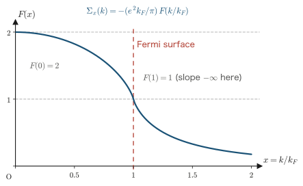
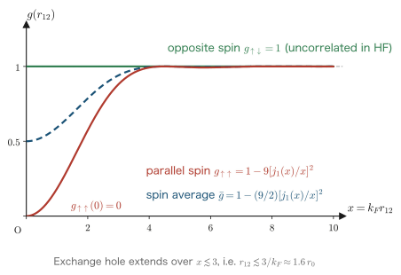
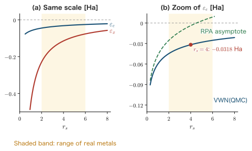
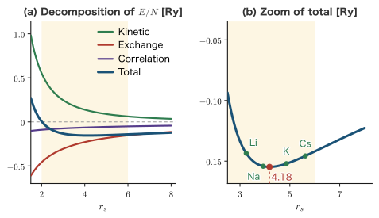

Chapter 7The Jellium Model and the Exchange and Correlation Energies
In Chapter 3 we studied the free-electron gas, in which the electron–electron interaction is ignored completely, and saw that the kinetic energy can be written in terms of the density alone, as $E/N = 2.21/r_s^2$ Ry. In Chapter 5 we learned the meaning of the exchange interaction through the Hartree–Fock (HF) method, and in Chapter 6 we developed second quantization as a tool for mechanizing that calculation. In this chapter we bring all of these together. The stage is the jellium model: an electron gas moving, with mutual Coulomb repulsion, in a background of positive charge spread out uniformly. This model is an idealization of the conduction electrons of simple metals, and at the same time it is the reference system of density functional theory (DFT) as a whole. The goal of this chapter is to work out completely by hand the energy of this model through the zeroth order (kinetic energy) and the first order (exchange energy) of the high-density expansion. As a result, we find that the energy per electron can be written as a function of the density alone, through $\rho^{2/3}$ and $\rho^{1/3}$. This is precisely the prototype of the statement “the energy is a functional of the density,” that is, of the Hohenberg–Kohn theorem of Chapter 9, and of the local density approximation (LDA) of Chapters 10 and 11. We then survey the problem of the correlation energy hidden in perturbation theory at second order and beyond, and see how it was settled by the RPA, the Wigner crystal, and quantum Monte Carlo methods.
- The definition of the jellium model, and the three-part splitting of the Hamiltonian $\hat{H}=\hat{H}_{\rm el}+\hat{H}_{\rm b}+\hat{H}_{\rm el\text{-}b}$
- The Yukawa convergence factor $e^{-\mu r}$ that controls the divergence of the long-range Coulomb interaction, and the order of limits in which $V\to\infty$ is taken first and $\mu\to 0$ afterward
- The second-quantized Hamiltonian in a plane-wave basis, and the mechanism by which the $q=0$ term cancels exactly against the background charge
- How nondimensionalization turns the interaction into a perturbation proportional to $r_s$ (the structure that justifies perturbation theory in the high-density limit)
- Zeroth order: rederiving the kinetic energy $E_0/N = 2.21/r_s^2$ Ry by second quantization
- First order: the complete derivation of the exchange energy $E_1/N = -0.916/r_s$ Ry (with the angular integration, the integration by parts, and the logarithmic integral all shown explicitly)
- The Dirac exchange functional $E_x^{\rm LDA}[\rho] = -C_x\int\rho^{4/3}\dd^3r$ and its extension to spin-polarized systems
- The correlation energy: the logarithmic divergence of second-order perturbation theory, the RPA (Gell-Mann–Brueckner), the Wigner crystal, and quantum Monte Carlo with the VWN parametrization
Math Note: The units of this chapter (Gaussian units and Hartree–Rydberg)
The basic system of this book is Hartree atomic units ($\hbar = m_e = e = 4\pi\varepsilon_0 = 1$). For historical reasons, however, the theory of the electron gas retains a firmly rooted custom of keeping $e^2$ explicit in Gaussian units and measuring energy in rydbergs. So that you can move freely between the two conventions, in this chapter we write $e^2$, $\hbar$, and $m$ explicitly in the course of derivations and give the final results in both sets of units. The following three conversions are what we need.
- The Bohr radius: $\displaystyle a_0 = \frac{\hbar^2}{m e^2}$. In atomic units, $a_0 = 1$.
- The hartree: $\displaystyle 1\ \mathrm{Ha} = \frac{e^2}{a_0} = \frac{m e^4}{\hbar^2} = 27.2114\ \mathrm{eV}$.
- The rydberg: $\displaystyle 1\ \mathrm{Ry} = \frac{e^2}{2a_0} = \frac{1}{2}\,\mathrm{Ha} = 13.6057\ \mathrm{eV}$. That is, $1\ \mathrm{Ha} = 2\ \mathrm{Ry}$.
In Gaussian units, the Coulomb potential between two point charges $q_1, q_2$ is $q_1q_2/r$, and $4\pi\varepsilon_0$ does not appear. The interaction between electrons is therefore written $e^2/\abs{\rr_1-\rr_2}$, and its Fourier transform is $4\pi e^2/q^2$. To move to atomic units, one simply sets $e^2 \to 1$, $\hbar\to1$, $m\to1$. Rydberg units are the convention in which $\hbar^2/2m = 1$ and $e^2 = 2$; in these units the kinetic energy can be written $\varepsilon = k^2$. The well-known numbers that appear in this chapter, $2.21/r_s^2$ and $-0.916/r_s$, are both values in Rydberg units. Converting to hartrees, we divide by 2 and obtain $1.105/r_s^2$ and $-0.458/r_s$. Because this is easy to confuse, from here on we will always state the units explicitly.
7.1 Setting Up the Model
First, we define precisely the object we are going to calculate. In this section we describe the ingredients of the jellium model (an electron gas, a uniform positive background, and electrical neutrality), explain why this model is special for DFT, and put the periodic boundary conditions, the plane-wave basis, and the density parameter $r_s$ introduced in Chapter 3 into the form we need.
7.1.1 Why jellium?
Consider the electronic structure of a simple metal (an alkali metal) such as Na or K. Around the nucleus of Na, the core electrons $1s^2 2s^2 2p^6$ are tightly bound, and outside them there is a single $3s$ electron. In the solid, this $3s$ electron leaves its atom, spreads over the whole crystal, and becomes a conduction electron. The metal can then be regarded as consisting of "$\mathrm{Na}^+$ ions fixed at lattice points (together with their core electrons)" and "a gas of conduction electrons moving around among them."
Here we make a bold approximation. We stop localizing the positive charge of the ions at the lattice points and smear it out uniformly over space. All the information that comes from the periodic arrangement of the ions (the band structure, the Brillouin zone, the stability of the crystal structure) is lost, but in exchange only the essence of the many-body problem, the "interacting electron gas," remains in pure form. We call this idealized model the jellium model. The name comes from the picture of the positive charge spread uniformly like "jelly."
This model has two faces.
- As a first approximation for simple metals. The conduction electrons of the alkali metals are only weakly affected by the crystal potential, and indeed the Fermi surface is nearly spherical. Jellium is an idealization of this situation, and, as we will see in Section 7.10, it gives the correct order of magnitude of the equilibrium density.
- As a reference system for DFT. This is by far the more important role. Jellium is the only interacting many-electron system for which it is obvious that the energy is determined by the density alone. In a uniform system the density $\rho$ is a constant, and there is only one quantity that characterizes the system, namely $\rho$ (or $r_s$). Therefore the total energy is necessarily a function of $\rho$. The local density approximation, which we study in Chapter 11, is the approximation in which "at each point of a nonuniform system, we borrow the energy density of the homogeneous electron gas that has the density $\rho(\rr)$ at that point," and the place from which we "borrow" is precisely the quantity calculated in this chapter.
Definition: The jellium model
Impose periodic boundary conditions on a cube of side $L$ and volume $V=L^3$. Into this cube we put the following.
- $N$ electrons of mass $m$ and charge $-e$. The electrons repel one another through the full Coulomb interaction $e^2/\abs{\rr_i-\rr_j}$.
- A rigid positive background charge of charge density $+e\,n_{\rm b}$ ($n_{\rm b} = N/V$ is a constant), distributed uniformly. The background does not move (it has no degrees of freedom).
The total charge of the system is $-eN + e\,n_{\rm b}V = 0$, so the system is electrically neutral. This neutrality condition is the key to the discussion in this chapter.
The background charge is taken to be "immobile" because the ions are more than $10^4$ times as massive as the electron and hardly move, which reflects the adiabatic (Born–Oppenheimer) approximation (Chapter 1). Therefore the kinetic energy of the background does not appear in the Hamiltonian of jellium, and the background acts on the electrons merely as an external potential (together with a constant energy).
7.1.2 Periodic boundary conditions and the plane-wave basis (review of Chapter 3)
As in Chapter 3, we impose the following Born–von Kármán periodic boundary conditions on a cube of volume $V=L^3$:
$$ \begin{equation} \psi(x+L, y, z) = \psi(x,y,z),\qquad \psi(x, y+L, z) = \psi(x,y,z),\qquad \psi(x, y, z+L) = \psi(x,y,z) \label{eq:7-pbc} \end{equation} $$The normalized one-electron eigenfunctions (including spin) that satisfy these conditions are plane waves:
$$ \begin{equation} \varphi_{\kk\lambda}(x) = \frac{1}{\sqrt{V}}\,e^{i\kk\cdot\rr}\,\eta_\lambda(\sigma), \qquad \kk = \frac{2\pi}{L}\,(n_1, n_2, n_3),\quad n_i = 0,\pm1,\pm2,\ldots \label{eq:7-planewave} \end{equation} $$Here $x=(\rr,\sigma)$ is the composite variable that includes spin, and $\eta_\lambda(\sigma)$ ($\lambda=\uparrow,\downarrow$) is the spin function, which satisfies $\sum_\sigma \eta_\lambda^*(\sigma)\eta_{\lambda'}(\sigma)=\delta_{\lambda\lambda'}$. The wavenumber is restricted to the discrete values $2\pi n_i/L$ because $e^{ik_xL}=1$, that is, $k_xL = 2\pi n_1$, is required.
Let us confirm the orthogonality relation that we will use repeatedly in this chapter. Under periodic boundary conditions,
$$ \begin{equation} \frac{1}{V}\int_V \dd^3r\; e^{i(\kk'-\kk)\cdot\rr} = \delta_{\kk\kk'} \label{eq:7-pworth} \end{equation} $$holds. Indeed, if $\kk=\kk'$, the integrand is 1 and the integral is $V$, so the left-hand side is 1. If $\kk\neq\kk'$, then, for example, for the $x$ component we have $\int_0^L \dd x\, e^{i(k_x'-k_x)x} = \big[e^{i(k_x'-k_x)x}/i(k_x'-k_x)\big]_0^L = 0$ (substituting $k_x'-k_x = 2\pi\Delta n/L$ gives $e^{2\pi i \Delta n}=1$, so the upper and lower ends cancel). Hence the left-hand side is 0.
The rule for replacing a sum by an integral (Chapter 3),
$$ \begin{equation} \sum_{\kk} \;\longrightarrow\; \frac{V}{(2\pi)^3}\int \dd^3k \label{eq:7-sum2int} \end{equation} $$is also a central tool in this chapter. It follows from the fact that a single allowed point in $\kk$ space occupies a volume $(2\pi/L)^3 = (2\pi)^3/V$.
7.1.3 Review of the density parameter $r_s$
We restate the density parameter introduced in Chapter 3. We express the volume per electron as that of a sphere of radius $r_0$, and $r_s$ is this radius measured in units of the Bohr radius:
$$ \begin{equation} \frac{4}{3}\pi r_0^3 = \frac{V}{N} = \frac{1}{\rho}, \qquad r_s \equiv \frac{r_0}{a_0}, \qquad a_0 = \frac{\hbar^2}{me^2}. \label{eq:7-rs-def} \end{equation} $$Here $\rho = N/V$ is the electron number density ($\rho$ and $n_{\rm b}$ are numerically equal, but the former refers to the density of the electrons and the latter to that of the background). We write down the relations derived in Chapter 3:
$$ \begin{align} \rho &= \frac{3}{4\pi r_0^3}, \label{eq:7-rho-r0}\\ k_F &= (3\pi^2\rho)^{1/3} = \left(\frac{9\pi}{4}\right)^{1/3}\frac{1}{r_0} = \frac{1.91916}{r_s}\ a_0^{-1}. \label{eq:7-kF-rs} \end{align} $$The first line is the first expression of \eqref{eq:7-rs-def} solved for $\rho$, and the second line is the cube root of $k_F^3 = 3\pi^2\rho = 3\pi^2\cdot 3/(4\pi r_0^3) = (9\pi/4)/r_0^3$. For real elemental metals, $2\lesssim r_s\lesssim 6$ (Table 3.1 in Chapter 3). Making the theory precise within this "narrow window" is the task of this chapter and of Chapter 11.
7.2 The Three-Part Splitting of the Hamiltonian and the Long-Range Divergence
In this section we split the Hamiltonian of jellium into three parts: an electron part, a background part, and an electron–background interaction part. We then face the difficulty that, because the Coulomb interaction is long-range, each part diverges individually, and we introduce the Yukawa convergence factor to control it. Finally, we evaluate the two terms involving the background completely by integration in spherical coordinates and confirm that they appear in the ratio $1 : -2$.
7.2.1 The three parts
Three kinds of contributions enter the energy of the system: (i) the kinetic energy of the electrons and the Coulomb repulsion between electrons, (ii) the Coulomb repulsion among the background charges, and (iii) the Coulomb attraction between the electrons and the background charge. We write them as $\hat{H}_{\rm el}$, $\hat{H}_{\rm b}$, and $\hat{H}_{\rm el\text{-}b}$, respectively:
$$ \begin{equation} \hat{H} = \hat{H}_{\rm el} + \hat{H}_{\rm b} + \hat{H}_{\rm el\text{-}b}. \label{eq:7-H3} \end{equation} $$Their explicit forms are as follows. Writing the charge density of the background as $\rho_{\rm b}(\rr) = n_{\rm b} = N/V$ (constant), we have
$$ \begin{align} \hat{H}_{\rm el} &= \sum_{i=1}^{N}\frac{\hat{\bm{p}}_i^2}{2m} + \frac{e^2}{2}\sum_{i\neq j}\frac{1}{\abs{\rr_i-\rr_j}}, \label{eq:7-Hel-raw}\\[2pt] \hat{H}_{\rm b} &= \frac{e^2}{2}\int \dd^3r\int \dd^3r'\; \frac{\rho_{\rm b}(\rr)\,\rho_{\rm b}(\rr')}{\abs{\rr-\rr'}}, \label{eq:7-Hb-raw}\\[2pt] \hat{H}_{\rm el\text{-}b} &= -\,e^2\sum_{i=1}^{N}\int \dd^3r\; \frac{\rho_{\rm b}(\rr)}{\abs{\rr-\rr_i}}. \label{eq:7-Helb-raw} \end{align} $$Let us check where the signs and coefficients come from. The factor $1/2$ in Eq. \eqref{eq:7-Hel-raw} corrects for the fact that the double sum over $i\neq j$ counts each electron pair $(i,j)$ twice. The $1/2$ in Eq. \eqref{eq:7-Hb-raw} has the same origin (each pair of infinitesimal elements of the background is counted twice). No $1/2$ appears in Eq. \eqref{eq:7-Helb-raw}. This is because it describes the interaction between charges of different kinds, electrons and background, so no double counting occurs. As for the sign, the electron charge is $-e$ and the background charge is $+e\rho_{\rm b}$, so the product $(-e)(+e\rho_{\rm b}) = -e^2\rho_{\rm b}$ is negative, that is, attractive. Note also that $\hat{H}_{\rm b}$ contains no electron coordinates, so it is not an operator but a mere constant.
7.2.2 The difficulty: each term diverges individually
A problem arises immediately. Let us carry out the integral in $\hat{H}_{\rm b}$. Since $\rho_{\rm b}$ is constant,
$$ \hat{H}_{\rm b} = \frac{e^2 n_{\rm b}^2}{2}\int \dd^3r\int \dd^3r'\;\frac{1}{\abs{\rr-\rr'}} $$and if we change the variable of the $\rr' $ integral to $\bm{s}=\rr'-\rr$, we obtain $\int \dd^3s\,/s = 4\pi\int_0^{R} s\,\dd s = 2\pi R^2$, which diverges as the size $R$ of the system grows. The same happens for $\hat{H}_{\rm el\text{-}b}$, and also for the “mean-field part” of the interaction term of $\hat{H}_{\rm el}$. The cause is that the Coulomb interaction $1/r$ is long-range (it does not decay fast enough at large distances).
Physically, this is not surprising. It is only natural that the energy of a system made up of positive charges alone, or of negative charges alone, diverges with the volume. In jellium, however, where the whole system is neutral, the three divergences should cancel one another. The problem is to carry out this “cancellation” by a mathematically legitimate procedure. To give a meaning to an expression like $\infty - 2\infty + \infty$, we must first make each term finite.
Math Note: The Yukawa-type convergence factor and the order of limits
The standard way to control the divergence is to replace the Coulomb interaction by a Yukawa-type interaction:
$$ \frac{1}{r}\;\longrightarrow\;\frac{e^{-\mu r}}{r},\qquad \mu > 0 . $$Here $\mu$ is a positive constant with the dimension of inverse length, and $1/\mu$ gives the range of the interaction. Thanks to the exponential decay, all the integrals converge absolutely. If we take $\mu\to 0$ after finishing all the calculations, we return to the original Coulomb system. This form is the same as the potential that Hideki Yukawa introduced to describe the nuclear force through meson exchange, and it has become a standard tool in both elementary-particle physics and condensed-matter physics for “temporarily making a long-range force short-range.” Physically, it corresponds to a situation in which a dielectric placed at a distance screens the charge, and it has the same form as the Thomas–Fermi screened potential $e^{-\kappa r}/r$ treated in Chapter 8.
What is decisively important here is the order of the limits. In this chapter we take the limits in the order
$$ \lim_{\mu\to0}\ \lim_{V\to\infty}\quad(\text{thermodynamic limit }V\to\infty\text{ first, }\mu\to0\text{ afterwards}) $$That is, keeping $\mu$ fixed, we first let $V\to\infty$ and $N\to\infty$ while holding the density $N/V$ constant, and only afterwards let $\mu\to0$. What this order means is that we always maintain the situation in which the range $1/\mu$ of the interaction is much shorter than the size $L$ of the system ($\mu L \gg 1$). Under this assumption, the range reached by the interaction as seen from any point inside the system lies entirely inside the system, so we may ignore the effect of the boundary and set the upper limit of the integral to $\infty$.
If the order is reversed (taking $\mu\to0$ first), we deal with an interaction of infinitely long range in a finite box, boundary effects dominate, and we obtain a physically meaningless result. Indeed, as we will see in Section 7.4, the term left over after the cancellation has the form $\propto 1/(\mu^2 V)$, which is zero if $V\to\infty$ is taken first and infinite if $\mu\to0$ is taken first. This is a typical example of the same expression taking different values depending on the order of the limits, and specifying the order is not a “convention” but a part of the physics.
We therefore replace all the $1/\abs{\rr-\rr'}$ in Eqs. \eqref{eq:7-Hel-raw}–\eqref{eq:7-Helb-raw} by $e^{-\mu\abs{\rr-\rr'}}/\abs{\rr-\rr'}$:
$$ \begin{align} \hat{H}_{\rm el} &= \sum_{i=1}^{N}\frac{\hat{\bm{p}}_i^2}{2m} + \frac{e^2}{2}\sum_{i\neq j}\frac{e^{-\mu\abs{\rr_i-\rr_j}}}{\abs{\rr_i-\rr_j}}, \label{eq:7-Hel-mu}\\[2pt] \hat{H}_{\rm b} &= \frac{e^2}{2}\,n_{\rm b}^2\int \dd^3r\int \dd^3r'\; \frac{e^{-\mu\abs{\rr-\rr'}}}{\abs{\rr-\rr'}}, \label{eq:7-Hb-mu}\\[2pt] \hat{H}_{\rm el\text{-}b} &= -\,e^2\,n_{\rm b}\sum_{i=1}^{N}\int \dd^3r\; \frac{e^{-\mu\abs{\rr-\rr_i}}}{\abs{\rr-\rr_i}}. \label{eq:7-Helb-mu} \end{align} $$7.2.3 The basic integral $\int e^{-\mu r}/r\,\dd^3r = 4\pi/\mu^2$
The integral needed to evaluate all three terms is, in fact, just the following single one. We compute it completely in spherical coordinates.
Derivation: The integral of the Yukawa potential over all space
We use spherical coordinates $(r,\theta,\phi)$. Noting that the integrand does not depend on the angles,
$$ \begin{align} \int \dd^3r\;\frac{e^{-\mu r}}{r} &= \int_0^{\infty}\dd r\, r^2 \int_0^{\pi}\dd\theta\,\sin\theta \int_0^{2\pi}\dd\phi\; \frac{e^{-\mu r}}{r} \label{eq:7-yuk1}\\ &= \left(\int_0^{2\pi}\dd\phi\right)\left(\int_0^{\pi}\sin\theta\,\dd\theta\right) \int_0^{\infty}\dd r\; r^2\,\frac{e^{-\mu r}}{r} \label{eq:7-yuk2}\\ &= 2\pi\cdot 2\cdot \int_0^{\infty}\dd r\; r\,e^{-\mu r} \label{eq:7-yuk3}\\ &= 4\pi\cdot\frac{1}{\mu^2} \;=\;\frac{4\pi}{\mu^2}. \label{eq:7-yuk4} \end{align} $$Eq. \eqref{eq:7-yuk1} merely writes down the three-dimensional volume element $\dd^3r = r^2\sin\theta\,\dd r\,\dd\theta\,\dd\phi$. In Eq. \eqref{eq:7-yuk2}, since the integrand is a function of $r$ only, we separated the angular integrals. In Eq. \eqref{eq:7-yuk3} we substituted $\int_0^{2\pi}\dd\phi = 2\pi$ and $\int_0^\pi\sin\theta\,\dd\theta = [-\cos\theta]_0^\pi = 1-(-1) = 2$, and used $r^2/r = r$.
The $r$ integral in Eq. \eqref{eq:7-yuk4} can be computed by integration by parts. Setting $u = r$ and $\dd v = e^{-\mu r}\dd r$ ($v = -e^{-\mu r}/\mu$), we obtain
$$ \int_0^{\infty} r\,e^{-\mu r}\,\dd r = \left[-\frac{r\,e^{-\mu r}}{\mu}\right]_0^{\infty} + \frac{1}{\mu}\int_0^{\infty} e^{-\mu r}\,\dd r = 0 + \frac{1}{\mu}\left[-\frac{e^{-\mu r}}{\mu}\right]_0^{\infty} = \frac{1}{\mu}\cdot\frac{1}{\mu} = \frac{1}{\mu^2}. $$The boundary term vanishes because, for $\mu>0$, $re^{-\mu r}\to0$ as $r\to\infty$ (the exponential decay wins over the growth of $r$), and at $r=0$ the factor $r$ itself is zero. Here $\mu>0$ plays an essential role: for $\mu=0$ this integral diverges.
We write down the result:
$$ \begin{equation} \int \dd^3r\;\frac{e^{-\mu r}}{r} = \frac{4\pi}{\mu^2}. \label{eq:7-yukawa-int} \end{equation} $$The fact that this diverges as $\mu\to0$ is precisely a manifestation of the long-range nature of the Coulomb interaction.
7.2.4 Evaluation of the background–background term
We now evaluate $\hat{H}_{\rm b}$. The procedure is: change variables to the relative coordinate and use Eq. \eqref{eq:7-yukawa-int}; the remaining integral over the center-of-mass coordinate then gives the volume $V$.
Derivation: $\hat{H}_{\rm b}$
$$ \begin{align} \hat{H}_{\rm b} &= \frac{e^2}{2}\,n_{\rm b}^2 \int_V \dd^3r \int_V \dd^3r'\;\frac{e^{-\mu\abs{\rr-\rr'}}}{\abs{\rr-\rr'}} \label{eq:7-Hb1}\\ &= \frac{e^2}{2}\,n_{\rm b}^2 \int_V \dd^3r \left[\int \dd^3s\;\frac{e^{-\mu s}}{s}\right] \label{eq:7-Hb2}\\ &= \frac{e^2}{2}\,n_{\rm b}^2 \int_V \dd^3r \;\frac{4\pi}{\mu^2} \label{eq:7-Hb3}\\ &= \frac{e^2}{2}\,n_{\rm b}^2\, V\,\frac{4\pi}{\mu^2} \label{eq:7-Hb4}\\ &= \frac{1}{2}\,e^2\,\frac{N^2}{V}\,\frac{4\pi}{\mu^2}. \label{eq:7-Hb5} \end{align} $$In Eq. \eqref{eq:7-Hb2}, we fixed $\rr$ and changed variables to $\bm{s} = \rr'-\rr$. The Jacobian is 1. The range of integration is, strictly speaking, a region that depends on $\rr$, but since we have assumed $\mu L\gg1$, as stated in the Math Note in Section 7.2.2, the integrand is already negligibly small for $s\gtrsim 1/\mu \ll L$. Therefore we may extend the range of integration to all of space (the $\rr$ dependence then disappears).
In Eq. \eqref{eq:7-Hb3} we substituted the basic integral \eqref{eq:7-yukawa-int}. In Eq. \eqref{eq:7-Hb4}, the remaining integrand is constant, so we used $\int_V\dd^3r = V$. In Eq. \eqref{eq:7-Hb5} we substituted $n_{\rm b} = N/V$ and used $n_{\rm b}^2 V = N^2/V$.
Per electron, this becomes
$$ \begin{equation} \frac{\hat{H}_{\rm b}}{N} = \frac{1}{2}\,e^2\,\frac{N}{V}\,\frac{4\pi}{\mu^2} \label{eq:7-Hb-perN} \end{equation} $$Since this is the energy of a system made up of positive charges alone, it is, as expected, positive (repulsive).
7.2.5 Evaluation of the electron–background term
Next we evaluate $\hat{H}_{\rm el\text{-}b}$. This time the integral is centered at the electron position $\rr_i$, but it again reduces to the basic integral \eqref{eq:7-yukawa-int}.
Derivation: $\hat{H}_{\rm el\text{-}b}$
$$ \begin{align} \hat{H}_{\rm el\text{-}b} &= -e^2 n_{\rm b}\sum_{i=1}^{N}\int_V \dd^3r\;\frac{e^{-\mu\abs{\rr-\rr_i}}}{\abs{\rr-\rr_i}} \label{eq:7-Helb1}\\ &= -e^2 n_{\rm b}\sum_{i=1}^{N}\int \dd^3s\;\frac{e^{-\mu s}}{s} \label{eq:7-Helb2}\\ &= -e^2 n_{\rm b}\sum_{i=1}^{N}\frac{4\pi}{\mu^2} \label{eq:7-Helb3}\\ &= -e^2\,n_{\rm b}\,N\,\frac{4\pi}{\mu^2} \;=\; -\,e^2\,\frac{N^2}{V}\,\frac{4\pi}{\mu^2}. \label{eq:7-Helb4} \end{align} $$In Eq. \eqref{eq:7-Helb2} we changed variables to $\bm{s} = \rr - \rr_i$. Note that the integral no longer depends on the electron position $\rr_i$. This is because the background is uniform, and it is a quantitative expression of the statement “a uniform background exerts no force on an electron” (Chapter 3). In Eq. \eqref{eq:7-Helb3} we substituted the basic integral, and in Eq. \eqref{eq:7-Helb4} we used the fact that the summand does not depend on $i$, so the sum is simply $N$ times the summand.
Per electron,
$$ \begin{equation} \frac{\hat{H}_{\rm el\text{-}b}}{N} = -\,e^2\,\frac{N}{V}\,\frac{4\pi}{\mu^2} \label{eq:7-Helb-perN} \end{equation} $$Since the interaction between an electron and the positive background is attractive, this is negative.
7.2.6 The meaning of the ratio $1 : -2$
Comparing Eqs. \eqref{eq:7-Hb-perN} and \eqref{eq:7-Helb-perN}, we see that the two share the same divergent factor $4\pi/\mu^2$ and that the ratio of their coefficients is
$$ \hat{H}_{\rm b} : \hat{H}_{\rm el\text{-}b} = \frac{1}{2} : (-1) = 1 : (-2) $$This ratio $1:-2$ is not a coincidence. Consider two interacting uniform charge distributions (with densities $+e n_{\rm b}$ and $-e n_{\rm b}$). The electrostatic energy then splits into three kinds, “positive–positive,” “positive–negative,” and “negative–negative”; the factor $1/2$ that prevents double counting is attached to the like-charge pairs but not to the unlike pair. Therefore the coefficients are $\frac12 : -1 : \frac12$, that is, $1:-2:1$. Adding the three gives $\frac12 - 1 + \frac12 = 0$.
We now have in hand two of these three, “positive–positive” and “positive–negative.” Their sum is
$$ \begin{equation} \hat{H}_{\rm b} + \hat{H}_{\rm el\text{-}b} = \frac{1}{2}e^2\frac{N^2}{V}\frac{4\pi}{\mu^2} - e^2\frac{N^2}{V}\frac{4\pi}{\mu^2} = -\frac{1}{2}\,e^2\,\frac{N^2}{V}\,\frac{4\pi}{\mu^2} \label{eq:7-Hb-plus-Helb} \end{equation} $$The remaining “negative–negative” part, that is, the mean-field part of the repulsion between electrons, is hidden inside $\hat{H}_{\rm el}$, and extracting it is the task of Section 7.4. The scenario we will show there is that exactly $+\frac12 e^2 (N^2/V)(4\pi/\mu^2)$ appears and cancels Eq. \eqref{eq:7-Hb-plus-Helb}.
Physical Meaning: Why is the background charge necessary?
Suppose we introduced no background charge and simply packed electrons into a box. The mean-field part of the electron–electron repulsion, $\frac12 e^2 (N^2/V)(4\pi/\mu^2)$, would then remain, and it diverges as $\mu\to0$. Per electron it is $\frac12 e^2 (N/V)(4\pi/\mu^2)$, which diverges even though the density is kept finite. In other words, a charged electron gas has no thermodynamic limit. The total charge of a system of $N$ electrons is $-Ne$, and its Coulomb self-energy is $\sim (Ne)^2/R \sim N^{5/3}$, which grows faster than $N$; it is therefore natural that the energy per electron diverges.
The background charge is not an “unnecessary assumption”; it is a necessary condition for the thermodynamic limit to exist. In real metals the positive ions play this role, and the very fact that a metal exists stably is a consequence of electrical neutrality. The positive background of the jellium model is nothing other than the simplest idealization of this.
7.3 Second Quantization of the Electron Part
From here on we use the tools developed in Chapter 6. We choose the plane-wave basis, Eq. \eqref{eq:7-planewave}, as the one-electron basis and rewrite $\hat{H}_{\rm el}$ in terms of creation and annihilation operators. The kinetic energy becomes diagonal, and the interaction term contains a Kronecker delta that expresses momentum conservation. The final goal of this section is to write down the electronic Hamiltonian of jellium in the complete second-quantized form $\hat{H}_{\rm el} = \hat{T} + \hat{V}$.
7.3.1 One-body term: kinetic energy
According to the results of Chapter 6, a one-body operator can be written as
$$ \begin{equation} \sum_{i}\hat{V}_1(x_i) = \sum_{\mu\nu}\langle\varphi_\mu|\hat{V}_1|\varphi_\nu\rangle\,a_\mu^\dagger a_\nu \label{eq:7-onebody-general} \end{equation} $$Let $\hat{V}_1 = \hat{\bm{p}}^2/2m = -(\hbar^2/2m)\nabla^2$, take the plane waves as the basis, and compute the matrix elements.
Derivation: Matrix elements of the kinetic energy
First we apply the Laplacian to a plane wave. For each component of $e^{i\kk'\cdot\rr}$ we have $\partial^2 e^{ik_x'x}/\partial x^2 = (ik_x')^2 e^{ik_x'x} = -k_x'^2 e^{ik_x'x}$, so
$$ -\frac{\hbar^2}{2m}\nabla^2\,\frac{e^{i\kk'\cdot\rr}}{\sqrt{V}}\eta_{\lambda'}(\sigma) = -\frac{\hbar^2}{2m}\big(-\abs{\kk'}^2\big)\frac{e^{i\kk'\cdot\rr}}{\sqrt{V}}\eta_{\lambda'}(\sigma) = \frac{\hbar^2\abs{\kk'}^2}{2m}\,\varphi_{\kk'\lambda'}(x). $$That is, a plane wave is an eigenfunction of the kinetic energy operator. Therefore
$$ \begin{align} \langle\varphi_{\kk\lambda}|-\tfrac{\hbar^2}{2m}\nabla^2|\varphi_{\kk'\lambda'}\rangle &= \frac{\hbar^2\abs{\kk'}^2}{2m}\int\dd x\;\varphi_{\kk\lambda}^*(x)\varphi_{\kk'\lambda'}(x) \label{eq:7-kin1}\\ &= \frac{\hbar^2\abs{\kk'}^2}{2m} \left[\frac{1}{V}\int_V\dd^3r\,e^{i(\kk'-\kk)\cdot\rr}\right] \left[\sum_\sigma \eta_\lambda^*(\sigma)\eta_{\lambda'}(\sigma)\right] \label{eq:7-kin2}\\ &= \frac{\hbar^2\abs{\kk'}^2}{2m}\,\delta_{\kk\kk'}\,\delta_{\lambda\lambda'} \;=\;\frac{\hbar^2\abs{\kk}^2}{2m}\,\delta_{\kk\kk'}\,\delta_{\lambda\lambda'}. \label{eq:7-kin3} \end{align} $$In Eq. \eqref{eq:7-kin2} we separated the spatial and spin parts according to $\int\dd x = \sum_\sigma\int\dd^3r$. In Eq. \eqref{eq:7-kin3} we used the orthogonality of plane waves, Eq. \eqref{eq:7-pworth}, and the orthogonality of the spin functions; since $\delta_{\kk\kk'}$ appears at the end, we rewrote $\kk'$ as $\kk$.
Substituting this into Eq. \eqref{eq:7-onebody-general}, only the terms with $\kk=\kk'$ and $\lambda=\lambda'$ survive in the double sum, and we obtain
$$ \begin{equation} \hat{T} = \sum_{\kk\lambda}\frac{\hbar^2\abs{\kk}^2}{2m}\,a_{\kk\lambda}^\dagger a_{\kk\lambda} = \sum_{\kk\lambda}\frac{\hbar^2\abs{\kk}^2}{2m}\,\hat{n}_{\kk\lambda} \label{eq:7-T-2q} \end{equation} $$The kinetic energy has taken the fully diagonal form of a weighted sum of number operators. This is the greatest benefit of choosing plane waves.
7.3.2 Two-body term: Fourier transform of the Yukawa potential
Next comes the highlight of this section. According to the results of Chapter 6, a two-body operator is
$$ \begin{equation} \frac{1}{2}\sum_{i\neq j}\hat{V}_2(x_i,x_j) = \frac{1}{2}\sum_{\mu\nu\gamma\delta} \langle\varphi_\mu\varphi_\nu|\hat{V}_2|\varphi_\gamma\varphi_\delta\rangle\, a_\mu^\dagger a_\nu^\dagger a_\delta a_\gamma \label{eq:7-twobody-general} \end{equation} $$and the electron-repulsion integral was defined as
$$ \begin{equation} \langle\varphi_\mu\varphi_\nu|\hat{V}_2|\varphi_\gamma\varphi_\delta\rangle = \int\dd x_1\int\dd x_2\; \varphi_\mu^*(x_1)\varphi_\nu^*(x_2)\,\hat{V}_2(x_1,x_2)\,\varphi_\gamma(x_1)\varphi_\delta(x_2) \label{eq:7-tei-def} \end{equation} $$(the nested convention: the first slot of the bra and the first slot of the ket correspond to the variable $x_1$, and the second slot of the bra and the second slot of the ket correspond to the variable $x_2$). We evaluate this in the plane-wave basis. First, we compute the Fourier transform needed for this purpose.
Derivation: Three-dimensional Fourier transform of the Yukawa potential
What we want is
$$ \tilde{v}_\mu(\bm{q}) \equiv \int \dd^3r\;e^{-i\bm{q}\cdot\rr}\,\frac{e^{-\mu r}}{r} $$The integrand depends on the direction of $\rr$ only through $\bm{q}\cdot\rr$. We therefore use spherical coordinates with $\bm{q}$ along the $z$ axis (the integral does not depend on how the coordinate axes are chosen, so this choice is free). Then $\bm{q}\cdot\rr = qr\cos\theta$, and
$$ \begin{align} \tilde{v}_\mu(\bm{q}) &= \int_0^{\infty}\dd r\,r^2\int_0^{\pi}\dd\theta\,\sin\theta\int_0^{2\pi}\dd\phi\; e^{-iqr\cos\theta}\,\frac{e^{-\mu r}}{r} \label{eq:7-ft1}\\ &= 2\pi\int_0^{\infty}\dd r\; r\,e^{-\mu r} \int_0^{\pi}\dd\theta\,\sin\theta\; e^{-iqr\cos\theta} \label{eq:7-ft2}\\ &= 2\pi\int_0^{\infty}\dd r\; r\,e^{-\mu r} \int_{-1}^{1}\dd u\; e^{-iqru} \label{eq:7-ft3}\\ &= 2\pi\int_0^{\infty}\dd r\; r\,e^{-\mu r}\cdot \left[\frac{e^{-iqru}}{-iqr}\right]_{u=-1}^{u=1} \label{eq:7-ft4}\\ &= 2\pi\int_0^{\infty}\dd r\; r\,e^{-\mu r}\cdot \frac{e^{-iqr}-e^{iqr}}{-iqr} \label{eq:7-ft5}\\ &= 2\pi\int_0^{\infty}\dd r\; r\,e^{-\mu r}\cdot \frac{-2i\sin(qr)}{-iqr} \label{eq:7-ft6}\\ &= \frac{4\pi}{q}\int_0^{\infty}\dd r\; e^{-\mu r}\sin(qr). \label{eq:7-ft7} \end{align} $$In Eq. \eqref{eq:7-ft2} we carried out the $\phi$ integral ($2\pi$) and used $r^2/r=r$. In Eq. \eqref{eq:7-ft3} we substituted $u=\cos\theta$ (since $\dd u = -\sin\theta\,\dd\theta$ and the integration range $\theta:0\to\pi$ becomes $u:1\to-1$, the sign is restored and we obtain $\int_{-1}^{1}\dd u$). Eq. \eqref{eq:7-ft4} is the integral of an exponential function in $u$. In Eq. \eqref{eq:7-ft6} we used Euler's formula $e^{i\alpha}-e^{-i\alpha} = 2i\sin\alpha$, and in Eq. \eqref{eq:7-ft7} we simplified $-2i/(-i) = 2$ and $r/r=1$ to obtain $2\pi\cdot 2/q = 4\pi/q$.
The remaining one-dimensional integral converges absolutely thanks to the convergence factor $e^{-\mu r}$. We compute it by rewriting it with a complex exponential:
$$ \begin{align} \int_0^{\infty}e^{-\mu r}\sin(qr)\,\dd r &= \mathrm{Im}\int_0^{\infty}e^{-\mu r}e^{iqr}\,\dd r \label{eq:7-sin1}\\ &= \mathrm{Im}\int_0^{\infty}e^{-(\mu-iq)r}\,\dd r \label{eq:7-sin2}\\ &= \mathrm{Im}\left[\frac{-e^{-(\mu-iq)r}}{\mu-iq}\right]_0^{\infty} = \mathrm{Im}\,\frac{1}{\mu-iq} \label{eq:7-sin3}\\ &= \mathrm{Im}\,\frac{\mu+iq}{(\mu-iq)(\mu+iq)} = \mathrm{Im}\,\frac{\mu+iq}{\mu^2+q^2} = \frac{q}{\mu^2+q^2}. \label{eq:7-sin4} \end{align} $$Eq. \eqref{eq:7-sin1} follows from $\sin(qr) = \mathrm{Im}\,e^{iqr}$. The upper limit vanishes in Eq. \eqref{eq:7-sin3} because $\abs{e^{-(\mu-iq)r}} = e^{-\mu r}\to0$ (for $\mu>0$). Here, too, $\mu>0$ is essential. In Eq. \eqref{eq:7-sin4} we multiplied by the conjugate $\mu+iq$ to make the denominator real.
Substituting into Eq. \eqref{eq:7-ft7}, we obtain
$$ \tilde{v}_\mu(\bm{q}) = \frac{4\pi}{q}\cdot\frac{q}{\mu^2+q^2} = \frac{4\pi}{\mu^2+q^2} $$The result is a function only of the magnitude $q=\abs{\bm{q}}$, independent of the direction of $\bm{q}$, because the original potential is spherically symmetric.
The $\mu\to0$ limit is the Fourier transform $4\pi/q^2$ of the Coulomb potential. For $q\neq0$ the limit exists without any problem, but for $q=0$ the quantity $4\pi/\mu^2$ diverges. The long-range divergence is concentrated at the single point $\bm{q}=\bm{0}$—this is the key to the whole argument of this chapter. The $\bm{q}=\bm{0}$ component is, in real space, the “spatially uniform component,” that is, the mean field produced by the average charge density. In a neutral system this mean field is canceled by the background charge.
7.3.3 Evaluating the electron-repulsion integral and momentum conservation
Now that the preparations are complete, we compute the electron-repulsion integral, Eq. \eqref{eq:7-tei-def}, in the plane-wave basis. Let $\mu = \kk_1\lambda_1$, $\nu = \kk_2\lambda_2$, $\gamma = \kk_3\lambda_3$, and $\delta = \kk_4\lambda_4$ (since the $\mu$ of the convergence factor and the index $\mu$ are easily confused, from here on we write the indices explicitly in terms of wave vector and spin).
Derivation: The two-electron integral in the plane-wave basis
$$ \begin{align} &\langle \kk_1\lambda_1\,\kk_2\lambda_2 |\hat{V}_2| \kk_3\lambda_3\,\kk_4\lambda_4\rangle \notag\\ &\quad= \sum_{\sigma_1\sigma_2}\int\dd^3r_1\int\dd^3r_2\; \frac{e^{-i\kk_1\cdot\rr_1}}{\sqrt V}\eta_{\lambda_1}^*(\sigma_1) \frac{e^{-i\kk_2\cdot\rr_2}}{\sqrt V}\eta_{\lambda_2}^*(\sigma_2)\; e^2\frac{e^{-\mu r_{12}}}{r_{12}}\; \frac{e^{i\kk_3\cdot\rr_1}}{\sqrt V}\eta_{\lambda_3}(\sigma_1) \frac{e^{i\kk_4\cdot\rr_2}}{\sqrt V}\eta_{\lambda_4}(\sigma_2) \label{eq:7-tei1}\\ &\quad= \delta_{\lambda_1\lambda_3}\delta_{\lambda_2\lambda_4}\; \frac{e^2}{V^2}\int\dd^3r_1\int\dd^3r_2\; e^{i(\kk_3-\kk_1)\cdot\rr_1}\,e^{i(\kk_4-\kk_2)\cdot\rr_2}\, \frac{e^{-\mu r_{12}}}{r_{12}} \label{eq:7-tei2} \end{align} $$Here $r_{12} = \abs{\rr_1-\rr_2}$. In Eq. \eqref{eq:7-tei2} we carried out the spin sums: $\sum_{\sigma_1}\eta_{\lambda_1}^*(\sigma_1)\eta_{\lambda_3}(\sigma_1) = \delta_{\lambda_1\lambda_3}$, and likewise $\sum_{\sigma_2}\to\delta_{\lambda_2\lambda_4}$. Since the Coulomb interaction does not act on spin, the spin of electron 1 and the spin of electron 2 are each conserved, as we can read off.
Next we change to relative and “center-of-mass” coordinates:
$$ \rr = \rr_1 - \rr_2,\qquad \bm{R} = \rr_2 \qquad\Longleftrightarrow\qquad \rr_1 = \rr+\bm{R},\quad \rr_2 = \bm{R}. $$The Jacobian of this transformation is 1 ($\dd^3r_1\dd^3r_2 = \dd^3r\,\dd^3R$). The exponent becomes
$$ (\kk_3-\kk_1)\cdot\rr_1 + (\kk_4-\kk_2)\cdot\rr_2 = (\kk_3-\kk_1)\cdot(\rr+\bm{R}) + (\kk_4-\kk_2)\cdot\bm{R} = (\kk_3-\kk_1)\cdot\rr + (\kk_3+\kk_4-\kk_1-\kk_2)\cdot\bm{R} $$when rearranged. Therefore
$$ \begin{align} &\langle \kk_1\lambda_1\,\kk_2\lambda_2 |\hat{V}_2| \kk_3\lambda_3\,\kk_4\lambda_4\rangle \notag\\ &\quad= \delta_{\lambda_1\lambda_3}\delta_{\lambda_2\lambda_4}\frac{e^2}{V^2} \left[\int_V\dd^3R\;e^{i(\kk_3+\kk_4-\kk_1-\kk_2)\cdot\bm{R}}\right] \left[\int\dd^3r\;e^{i(\kk_3-\kk_1)\cdot\rr}\frac{e^{-\mu r}}{r}\right] \label{eq:7-tei3}\\ &\quad= \delta_{\lambda_1\lambda_3}\delta_{\lambda_2\lambda_4}\frac{e^2}{V^2} \cdot V\,\delta_{\kk_1+\kk_2,\;\kk_3+\kk_4} \cdot \frac{4\pi}{\mu^2+\abs{\kk_1-\kk_3}^2} \label{eq:7-tei4}\\ &\quad= \delta_{\lambda_1\lambda_3}\delta_{\lambda_2\lambda_4}\; \delta_{\kk_1+\kk_2,\;\kk_3+\kk_4}\; \frac{e^2}{V}\,\frac{4\pi}{\mu^2+\abs{\kk_1-\kk_3}^2}. \label{eq:7-tei5} \end{align} $$For the first factor in Eq. \eqref{eq:7-tei4} we used the orthogonality of plane waves, Eq. \eqref{eq:7-pworth}: $\int_V\dd^3R\,e^{i\bm{G}\cdot\bm{R}} = V\delta_{\bm{G},\bm{0}}$. The second factor is the Fourier transform, Eq. \eqref{eq:7-yukawa-ft}, applied with $\bm{q} = \kk_1-\kk_3$ (check that the sign of the exponent agrees: $e^{i(\kk_3-\kk_1)\cdot\rr} = e^{-i(\kk_1-\kk_3)\cdot\rr}$). The reason we may extend the range of the relative-coordinate integral to all space is the same as in Section 7.2.4 ($\mu L\gg1$).
Writing down the result, we have
$$ \begin{equation} \langle \kk_1\lambda_1\,\kk_2\lambda_2 |\hat{V}_2| \kk_3\lambda_3\,\kk_4\lambda_4\rangle = \delta_{\lambda_1\lambda_3}\delta_{\lambda_2\lambda_4}\, \delta_{\kk_1+\kk_2,\,\kk_3+\kk_4}\, \frac{e^2}{V}\,\frac{4\pi}{\mu^2+\abs{\kk_1-\kk_3}^2} \label{eq:7-tei-final} \end{equation} $$Three kinds of Kronecker delta have appeared. Their meanings are as follows.
Physical Meaning: What the three deltas tell us
- $\delta_{\lambda_1\lambda_3}$, $\delta_{\lambda_2\lambda_4}$: conservation of spin. Since the Coulomb interaction contains no spin operator, the spin of each electron does not change between before and after the scattering.
- $\delta_{\kk_1+\kk_2,\,\kk_3+\kk_4}$: conservation of total momentum. This is a consequence of the interaction depending only on the relative position $\rr_1-\rr_2$ of the two particles (that is, being translationally invariant). Mathematically, the integral over the center-of-mass coordinate $\bm{R}$ becomes a “superposition of uniform phases,” and it survives only when the phases do not cancel completely ($\kk_1+\kk_2 = \kk_3+\kk_4$). The correspondence between translational symmetry and momentum conservation (Noether's theorem) appears here in the form of the orthogonality of plane waves.
The strength of the interaction, $4\pi e^2/(\mu^2+q^2)$, is determined only by the momentum transfer $\bm{q}=\kk_1-\kk_3$. The smaller $q$ is, the stronger the interaction ($4\pi e^2/q^2$ as $\mu\to0$). This is the expression in $\kk$ space of the fact that the Coulomb force is long range in real space.
7.3.4 Rewriting in terms of the momentum transfer
We substitute Eq. \eqref{eq:7-tei-final} into Eq. \eqref{eq:7-twobody-general}. Because of $\delta_{\lambda_1\lambda_3}\delta_{\lambda_2\lambda_4}$, the spin indices are reduced to two ($\lambda_1,\lambda_2$), and because of $\delta_{\kk_1+\kk_2,\kk_3+\kk_4}$, the number of independent degrees of freedom of the wavenumbers is reduced from four to three. We therefore relabel the variables as
$$ \begin{equation} \kk_3 = \kk,\qquad \kk_4 = \bm{p},\qquad \kk_1 = \kk+\bm{q},\qquad \kk_2 = \bm{p}-\bm{q} \label{eq:7-relabel} \end{equation} $$This substitution automatically satisfies momentum conservation: $\kk_1+\kk_2 = (\kk+\bm{q})+(\bm{p}-\bm{q}) = \kk+\bm{p} = \kk_3+\kk_4$. Also, the momentum transfer becomes $\kk_1-\kk_3 = \bm{q}$. Since the sets of $(\kk_1,\kk_2,\kk_3,\kk_4)$ that satisfy the conservation law are in one-to-one correspondence with $(\kk,\bm{p},\bm{q})$, the change of summation variables is justified.
The two-body term becomes
$$ \begin{equation} \hat{V} = \frac{e^2}{2V}\sum_{\kk\bm{p}\bm{q}}\sum_{\lambda_1\lambda_2} \frac{4\pi}{\mu^2+q^2}\; a_{(\kk+\bm{q})\lambda_1}^\dagger\,a_{(\bm{p}-\bm{q})\lambda_2}^\dagger\, a_{\bm{p}\lambda_2}\,a_{\kk\lambda_1}. \label{eq:7-V-2q} \end{equation} $$Let us pay attention to the ordering of the operators. In the convention of Chapter 6, $a_\mu^\dagger a_\nu^\dagger a_\delta a_\gamma$, $\mu\leftrightarrow\gamma$ ($\kk_1\leftrightarrow\kk_3$) and $\nu\leftrightarrow\delta$ ($\kk_2\leftrightarrow\kk_4$) correspond. That is, the annihilation operators are arranged in the order $a_{\kk_4\lambda_4}a_{\kk_3\lambda_3} = a_{\bm{p}\lambda_2}a_{\kk\lambda_1}$. If we get this “nested” ordering wrong, the sign of the exchange term is reversed, so the ordering must be observed, even if only mechanically.
Summarizing the above, the electronic part of the jellium Hamiltonian is
$$ \begin{equation} \hat{H}_{\rm el} = \sum_{\kk\lambda}\frac{\hbar^2\abs{\kk}^2}{2m}a_{\kk\lambda}^\dagger a_{\kk\lambda} + \frac{e^2}{2V}\sum_{\kk\bm{p}\bm{q}}\sum_{\lambda_1\lambda_2} \frac{4\pi}{\mu^2+q^2}\, a_{(\kk+\bm{q})\lambda_1}^\dagger a_{(\bm{p}-\bm{q})\lambda_2}^\dagger a_{\bm{p}\lambda_2}a_{\kk\lambda_1} \label{eq:7-Hel-2q} \end{equation} $$We can write it in this form. What have we obtained? By choosing the plane-wave basis, all the multiple integrals of first quantization were carried out analytically, and what remains is only the algebra of creation and annihilation operators and the sums over $\kk$, $\bm{p}$, and $\bm{q}$. In the next section we single out the $\bm{q}=\bm{0}$ term of this sum and show that it cancels exactly against the background term computed in Section 7.2.
7.4 The $\bm{q}=\bm{0}$ Term and the Cancellation of the Background Charge
The sum in the interaction term \eqref{eq:7-V-2q} obtained in Section 7.3 contains a $\bm{q}=\bm{0}$ term, in which the strength of the interaction is $4\pi/\mu^2$ and diverges as $\mu\to0$. In this section we separate this term from the sum, simplify it with operator algebra, and show that it cancels exactly against the background term \eqref{eq:7-Hb-plus-Helb} found in Section 7.2. What remains after the cancellation is only a term that vanishes as $V\to\infty$, and as a result we obtain a finite Hamiltonian.
7.4.1 Separating the $\bm{q}=\bm{0}$ term
First we split the sum into two parts. Below, $\sum'$ denotes a sum that excludes $\bm{q}=\bm{0}$:
$$ \begin{equation} \hat{V} = \underbrace{\frac{e^2}{2V}\frac{4\pi}{\mu^2} \sum_{\kk\bm{p}}\sum_{\lambda_1\lambda_2} a_{\kk\lambda_1}^\dagger a_{\bm{p}\lambda_2}^\dagger a_{\bm{p}\lambda_2}a_{\kk\lambda_1}}_{\displaystyle \hat{V}_{\bm{q}=\bm{0}}} \;+\; \underbrace{\frac{e^2}{2V}\sum_{\kk\bm{p}\bm{q}}{}'\sum_{\lambda_1\lambda_2} \frac{4\pi}{\mu^2+q^2}\, a_{(\kk+\bm{q})\lambda_1}^\dagger a_{(\bm{p}-\bm{q})\lambda_2}^\dagger a_{\bm{p}\lambda_2}a_{\kk\lambda_1}}_{\displaystyle \hat{V}'}. \label{eq:7-Vsplit} \end{equation} $$Note that in the first term, after substituting $\bm{q}=\bm{0}$, the indices of the creation operators become $\kk+\bm{0}=\kk$ and $\bm{p}-\bm{0}=\bm{p}$, which coincide with the indices of the annihilation operators. In $\hat{V}'$ we have $q\neq0$, so the limit $\mu\to0$ can be taken without any problem, giving $4\pi/q^2$. In what follows we simplify the product of operators contained in $\hat{V}_{\bm{q}=\bm{0}}$.
7.4.2 Reordering the operators: $\hat{N}^2-\hat{N}$
Derivation: $\sum_{\kk\bm{p}\lambda_1\lambda_2} a_{\kk\lambda_1}^\dagger a_{\bm{p}\lambda_2}^\dagger a_{\bm{p}\lambda_2}a_{\kk\lambda_1} = \hat{N}^2-\hat{N}$
We need only two tools, the anticommutation relations of Chapter 6, $\{a_\mu,a_\nu\}=0$ and $\{a_\mu,a_\nu^\dagger\}=\delta_{\mu\nu}$. We begin by interchanging the two annihilation operators in the middle.
$$ \begin{align} a_{\kk\lambda_1}^\dagger a_{\bm{p}\lambda_2}^\dagger a_{\bm{p}\lambda_2}a_{\kk\lambda_1} &= -\,a_{\kk\lambda_1}^\dagger a_{\bm{p}\lambda_2}^\dagger\, a_{\kk\lambda_1}a_{\bm{p}\lambda_2} \label{eq:7-q0a}\\ &= -\,a_{\kk\lambda_1}^\dagger \Big(\delta_{\kk\bm{p}}\delta_{\lambda_1\lambda_2} - a_{\kk\lambda_1}a_{\bm{p}\lambda_2}^\dagger\Big) a_{\bm{p}\lambda_2} \label{eq:7-q0b}\\ &= -\,\delta_{\kk\bm{p}}\delta_{\lambda_1\lambda_2}\,a_{\kk\lambda_1}^\dagger a_{\bm{p}\lambda_2} \;+\; a_{\kk\lambda_1}^\dagger a_{\kk\lambda_1}\,a_{\bm{p}\lambda_2}^\dagger a_{\bm{p}\lambda_2} \label{eq:7-q0c}\\ &= -\,\delta_{\kk\bm{p}}\delta_{\lambda_1\lambda_2}\,\hat{n}_{\kk\lambda_1} \;+\; \hat{n}_{\kk\lambda_1}\,\hat{n}_{\bm{p}\lambda_2}. \label{eq:7-q0d} \end{align} $$\eqref{eq:7-q0a}: We used the anticommutation relation between annihilation operators, $a_{\bm{p}\lambda_2}a_{\kk\lambda_1} = -a_{\kk\lambda_1}a_{\bm{p}\lambda_2}$.
\eqref{eq:7-q0b}: We applied $a_{\bm{p}\lambda_2}^\dagger a_{\kk\lambda_1} = \delta_{\kk\bm{p}}\delta_{\lambda_1\lambda_2} - a_{\kk\lambda_1}a_{\bm{p}\lambda_2}^\dagger$ (the basic anticommutation relation with a term moved to the other side) to the middle factor $a_{\bm{p}\lambda_2}^\dagger a_{\kk\lambda_1}$.
\eqref{eq:7-q0c}: We expanded the parentheses and, in the second term, used $-(-1)=+1$.
\eqref{eq:7-q0d}: We used the definition of the number operator $\hat{n}_{\kk\lambda}=a_{\kk\lambda}^\dagger a_{\kk\lambda}$ and, in the first term, replaced $\bm{p}\lambda_2\to\kk\lambda_1$ by means of the delta function.
We sum both sides over $\kk,\bm{p},\lambda_1,\lambda_2$. The second term factorizes as $\big(\sum_{\kk\lambda_1}\hat{n}_{\kk\lambda_1}\big)\big(\sum_{\bm{p}\lambda_2}\hat{n}_{\bm{p}\lambda_2}\big) = \hat{N}^2$, and in the first term the delta function collapses the double sum into a single sum, giving $-\sum_{\kk\lambda_1}\hat{n}_{\kk\lambda_1} = -\hat{N}$. Here $\hat{N} = \sum_{\kk\lambda}\hat{n}_{\kk\lambda}$ is the particle-number operator (Chapter 6). Therefore
$$ \sum_{\kk\bm{p}}\sum_{\lambda_1\lambda_2} a_{\kk\lambda_1}^\dagger a_{\bm{p}\lambda_2}^\dagger a_{\bm{p}\lambda_2}a_{\kk\lambda_1} = \hat{N}^2 - \hat{N} = \hat{N}(\hat{N}-1). $$The combination $\hat{N}(\hat{N}-1)$ is a natural one. The number of “ordered pairs” obtained by choosing two distinct electrons out of $N$ electrons is $N(N-1)$, and $\frac12 N(N-1)$ is the number of unordered pairs. Recalling that $\hat{V}_{\bm{q}=\bm{0}}$ carries a prefactor $\frac12$, we see that the $\bm{q}=\bm{0}$ term correctly counts “the sum of the uniform ($\bm{q}=\bm{0}$) Coulomb repulsion over all distinct electron pairs”. The term $-\hat{N}$ plays the role of removing the self-interaction (as we saw in Chapter 6, in second quantization the self-interaction drops out automatically because of the anticommutation relations).
In the subspace in which the number of electrons is fixed at $N$, we may replace $\hat{N}\to N$, so
$$ \begin{equation} \hat{V}_{\bm{q}=\bm{0}} = \frac{e^2}{2V}\,\frac{4\pi}{\mu^2}\,\big(N^2-N\big). \label{eq:7-Vq0} \end{equation} $$7.4.3 The cancellation
Now we carry out the cancellation. We add the result of Section 7.2, Eq. \eqref{eq:7-Hb-plus-Helb}, and Eq. \eqref{eq:7-Vq0}.
$$ \begin{align} \hat{V}_{\bm{q}=\bm{0}} + \hat{H}_{\rm b} + \hat{H}_{\rm el\text{-}b} &= \frac{e^2}{2V}\frac{4\pi}{\mu^2}\big(N^2-N\big) \;-\;\frac{1}{2}e^2\frac{N^2}{V}\frac{4\pi}{\mu^2} \label{eq:7-canc1}\\ &= \frac{e^2}{2V}\frac{4\pi}{\mu^2}\Big[\big(N^2-N\big) - N^2\Big] \label{eq:7-canc2}\\ &= -\,\frac{e^2}{2V}\frac{4\pi}{\mu^2}\,N \;=\; -\,\frac{2\pi e^2 N}{\mu^2 V}. \label{eq:7-canc3} \end{align} $$In Eq. \eqref{eq:7-canc2} we factored out the common factor $\frac{e^2}{2V}\frac{4\pi}{\mu^2}$. In Eq. \eqref{eq:7-canc3} the $N^2$ has disappeared completely. This is the cancellation of the long-range divergences.
Rewriting the remaining term per electron, we obtain
$$ \begin{equation} \frac{1}{N}\Big(\hat{V}_{\bm{q}=\bm{0}} + \hat{H}_{\rm b} + \hat{H}_{\rm el\text{-}b}\Big) = -\,\frac{2\pi e^2}{\mu^2 V} \label{eq:7-residual} \end{equation} $$Here the order of limits declared in the Math Note of Section 7.2.2 becomes important. If we take $V\to\infty$ ($N/V$ constant) with $\mu$ held fixed, Eq. \eqref{eq:7-residual} converges to zero because $1/V\to0$. Taking $\mu\to0$ afterward then changes nothing. Therefore
$$ \lim_{\mu\to0}\ \lim_{V\to\infty}\ \left(-\frac{2\pi e^2}{\mu^2 V}\right) = 0 . $$If we reverse the order and take $\mu\to0$ first, then $-2\pi e^2/(\mu^2 V)\to-\infty$ and no meaningful result is obtained. The fact that the same expression becomes $0$ or $-\infty$ depending on the order of the limits shows that this procedure is not a mere formality but has physical content.
Physical Meaning: The remaining term is the “self-energy of one electron”
Tracing the origin of the term \eqref{eq:7-residual} left over after the cancellation, we find that it is the $-N$ term of Eq. \eqref{eq:7-Vq0}, that is, the correction that removes the self-interaction. Its magnitude per electron, $\frac{1}{2}e^2\cdot\frac{1}{V}\cdot\frac{4\pi}{\mu^2}$, equals “the electrostatic self-energy when the charge of one electron is spread uniformly over the entire volume $V$”. As the volume over which the charge is spread becomes larger, this self-energy is diluted and goes to zero—this is why it vanishes as $V\to\infty$.
Conversely, in a calculation in a finite box (all actual first-principles calculations are done in a finite periodic cell), this term remains as a finite-size effect of order $O(1/V)$. The operations called the “Madelung correction” and the “jellium background correction” in DFT calculations for periodic systems deal precisely with terms of this kind (Chapter 14).
7.4.4 The final Hamiltonian of jellium
We now summarize. In the limit $\mu\to0$, the strength of the interaction in $\hat{V}'$ becomes $4\pi/q^2$, which is finite as long as $\bm{q}=\bm{0}$ is excluded. The Hamiltonian of jellium is therefore fixed in the following form.
Here $\sum'$ is the sum excluding $\bm{q}=\bm{0}$. The background charge survives, transformed, in the single prime on this $\sum'$. At first sight the background seems to have vanished from the equation, but the operation of excluding $\bm{q}=\bm{0}$ is itself the effect of the background charge.
Physical Meaning: What does it mean to exclude $\bm{q}=\bm{0}$?
The $\bm{q}=\bm{0}$ Fourier component is the spatially uniform component. When the electron density distribution $\rho(\rr)$ is decomposed into Fourier components, the $\bm{q}=\bm{0}$ component represents the average density $N/V$, and the $\bm{q}\neq\bm{0}$ components represent fluctuations about the average. In jellium the average density of the electrons and the density of the background are exactly equal, so the uniform electrostatic potentials they produce cancel each other, and the electrons feel only the interaction between density fluctuations. The $\sum'$ in Eq. \eqref{eq:7-H-final} expresses exactly this.
This viewpoint amounts to decomposing jellium into “a uniform part (the classical electrostatic energy, which is zero because of neutrality) + a fluctuation part (quantum many-body effects)”. The exchange energy and the correlation energy obtained in the calculations that follow are all effects produced by the fluctuations. The exchange-correlation energy in DFT is likewise defined as “what remains after subtracting the Hartree term” (Chapter 10), which has the same structure, and jellium is its most transparent example.
Example: What happens if $\bm{q}=\bm{0}$ is not excluded?
Suppose we forget the background charge and carry out the calculation with $\bm{q}=\bm{0}$ included. By Eq. \eqref{eq:7-Vq0}, a term $\frac{e^2}{2V}\frac{4\pi}{\mu^2}N^2$ is then added to the total energy. Per electron it is $\frac{1}{2}e^2\frac{N}{V}\frac{4\pi}{\mu^2}$, which diverges as $\mu\to0$ with the density $N/V$ held constant. As a numerical illustration, take an electron gas with $r_s=4$ ($N/V = 3/(4\pi\cdot4^3) = 3.73\times10^{-3}\ a_0^{-3}$) and $1/\mu = 100\,a_0$ (still sufficiently “short-range”); even so, this term amounts to $\frac12\times 3.73\times10^{-3}\times 4\pi\times 10^4 \approx 234$ Ha $\approx 6.4\times10^{3}$ eV per electron. This is incomparably large next to the kinetic energy ($0.069$ Ha) and the exchange energy ($-0.115$ Ha). This number shows that in a calculation for an electron gas that ignores the neutrality condition, the physically meaningful quantities are completely buried.
7.5 Nondimensionalization and the High-Density Limit
The final Hamiltonian \eqref{eq:7-H-final} is exact, but we cannot solve it as it stands. We would like to turn to perturbation theory, but “what is small” is not yet clear. In this section, by replacing the unit of length with the radius $r_0$ per electron (that is, by nondimensionalizing), we show that the kinetic-energy term and the interaction term scale with different powers of $r_s$, and therefore that in the high-density limit $r_s\to0$ the interaction becomes a perturbation.
7.5.1 Introducing dimensionless variables
We choose $r_0$ ($=r_s a_0$, the radius of the sphere per electron, Eq. \eqref{eq:7-rs-def}) as the unit of length and introduce the following dimensionless quantities:
$$ \begin{equation} \bar{\rr} = \frac{\rr}{r_0},\qquad \bar{\kk} = r_0\,\kk,\qquad \bar{\bm{q}} = r_0\,\bm{q},\qquad \bar{V} = \frac{V}{r_0^3}. \label{eq:7-dimless} \end{equation} $$We multiply the wavenumber by $r_0$ because the wavenumber has the dimension of an inverse length (so that $\kk\cdot\rr = \bar{\kk}\cdot\bar{\rr}$ is dimensionless). The quantity $\bar V = V/r_0^3$ expresses “how many spheres per electron the volume amounts to,” and by the definition \eqref{eq:7-rs-def},
$$ \bar{V} = \frac{V}{r_0^3} = \frac{N\cdot\frac{4}{3}\pi r_0^3}{r_0^3} = \frac{4\pi}{3}N $$holds. That is, $\bar V$ is a pure number proportional to $N$ and does not depend on $r_s$. This is the important point: after nondimensionalization, only the coefficients depend on $r_s$.
7.5.2 Scaling of the kinetic-energy term
Derivation: Nondimensionalization of $\hat{T}$
$$ \begin{align} \hat{T} &= \sum_{\kk\lambda}\frac{\hbar^2\abs{\kk}^2}{2m}\,a_{\kk\lambda}^\dagger a_{\kk\lambda} \label{eq:7-Tscale1}\\ &= \frac{\hbar^2}{2m r_0^2}\sum_{\bar{\kk}\lambda}\abs{\bar{\kk}}^2\,a_{\bar\kk\lambda}^\dagger a_{\bar\kk\lambda} \label{eq:7-Tscale2}\\ &= \frac{e^2 a_0}{2 r_0^2}\sum_{\bar{\kk}\lambda}\abs{\bar{\kk}}^2\,a_{\bar\kk\lambda}^\dagger a_{\bar\kk\lambda} \label{eq:7-Tscale3}\\ &= \frac{e^2}{a_0 r_s^2}\sum_{\bar{\kk}\lambda}\frac{1}{2}\abs{\bar{\kk}}^2\,a_{\bar\kk\lambda}^\dagger a_{\bar\kk\lambda}. \label{eq:7-Tscale4} \end{align} $$\eqref{eq:7-Tscale2}: We substituted $\abs{\kk}^2 = \abs{\bar\kk}^2/r_0^2$ and moved the factor depending on $r_0$ outside the sum.
\eqref{eq:7-Tscale3}: We read the definition of the Bohr radius, $a_0=\hbar^2/(me^2)$, as $\hbar^2/m = e^2a_0$ and substituted it.
\eqref{eq:7-Tscale4}: Since $r_0 = r_s a_0$, we have $r_0^2 = r_s^2a_0^2$, so $\dfrac{e^2a_0}{2r_0^2} = \dfrac{e^2a_0}{2r_s^2a_0^2} = \dfrac{e^2}{a_0r_s^2}\cdot\dfrac{1}{2}$. We put $\frac12$ inside the sum.
7.5.3 Scaling of the interaction term
Derivation: Nondimensionalization of $\hat{V}'$
$$ \begin{align} \hat{V}' &= \frac{e^2}{2V}\sum_{\kk\bm{p}\bm{q}}{}'\sum_{\lambda_1\lambda_2}\frac{4\pi}{q^2}\, a^\dagger a^\dagger a a \label{eq:7-Vscale1}\\ &= \frac{e^2}{2\bar V r_0^3}\sum{}'\frac{4\pi r_0^2}{\bar q^2}\,a^\dagger a^\dagger a a \label{eq:7-Vscale2}\\ &= \frac{e^2}{2\bar V r_0}\sum{}'\frac{4\pi}{\bar q^2}\,a^\dagger a^\dagger a a \label{eq:7-Vscale3}\\ &= \frac{e^2}{a_0 r_s^2}\cdot\frac{r_s}{2\bar V}\sum{}'\frac{4\pi}{\bar q^2}\,a^\dagger a^\dagger a a . \label{eq:7-Vscale4} \end{align} $$\eqref{eq:7-Vscale2}: We substituted $V = \bar V r_0^3$ and $q^2 = \bar q^2/r_0^2$ (that is, $1/q^2 = r_0^2/\bar q^2$).
\eqref{eq:7-Vscale3}: We canceled $r_0^2/r_0^3 = 1/r_0$.
\eqref{eq:7-Vscale4}: We rewrote $\dfrac{e^2}{r_0} = \dfrac{e^2}{a_0 r_s} = \dfrac{e^2}{a_0r_s^2}\cdot r_s$ (multiplying the numerator and denominator by $r_s$).
Combining the two, the Hamiltonian of jellium can be written as follows.
What have we obtained? Inside the square brackets, $r_s$ appears only once, as the factor $r_s$ in front of the interaction term (the range of the sums and $\bar V$ do not depend on $r_s$). That is, $r_s$ plays the role of the coupling constant. The overall factor $e^2/(a_0r_s^2) = \mathrm{Ha}/r_s^2 = 2\,\mathrm{Ry}/r_s^2$ is merely the scale of energy.
7.5.4 Why perturbation theory is justified in the high-density limit
Physical Meaning: The higher the density, the “more weakly they interact”
What Eq. \eqref{eq:7-H-dimless} asserts is the following. If we take $e^2/(a_0r_s^2)$ as the scale of energy, the magnitude of the kinetic-energy term is $O(1)$ regardless of $r_s$, whereas the magnitude of the interaction term is $O(r_s)$. Therefore
$$ \frac{\text{interaction energy}}{\text{kinetic energy}} \sim r_s . $$As $r_s\to0$ (high density), the interaction becomes relatively weaker than the kinetic energy, and so treating the interaction term as a perturbation is justified. This can be seen from dimensional analysis alone: for a system whose typical length is $r_0$, the quantum kinetic energy is $\sim\hbar^2/(mr_0^2)$ by the uncertainty relation, and the Coulomb energy is $\sim e^2/r_0$. Their ratio is
$$ \frac{e^2/r_0}{\hbar^2/(mr_0^2)} = \frac{m e^2 r_0}{\hbar^2} = \frac{r_0}{a_0} = r_s . $$The kinetic energy scales as the $-2$ power of the length and the Coulomb energy as the $-1$ power, so when the system is compressed, the kinetic energy grows faster. This is the true nature of “high density = weak coupling.”
This conclusion runs counter to classical intuition. In a classical gas, raising the density brings the molecules closer together and the interaction becomes stronger. The reason this is reversed in the electron gas is that the quantum kinetic energy arising from the Pauli exclusion principle (Chapter 3) repels very strongly against compression. Conversely, as $r_s\to\infty$ (low density), the interaction dominates, and the electrons try to avoid one another even at the cost of kinetic energy. In that limit the electrons form a crystal—this is the Wigner crystal treated in Section 7.9.
The framework of perturbation theory is as follows. We split Eq. \eqref{eq:7-H-dimless} as $\hat H = \hat H_0 + \hat H_1$ and let
$$ \begin{equation} \hat{H}_0 = \sum_{\kk\lambda}\frac{\hbar^2\abs{\kk}^2}{2m}a_{\kk\lambda}^\dagger a_{\kk\lambda} \ \ (\text{$O(r_s^{-2})$}), \qquad \hat{H}_1 = \frac{e^2}{2V}\sum_{\kk\bm{p}\bm{q}}{}'\sum_{\lambda_1\lambda_2} \frac{4\pi}{q^2}a^\dagger a^\dagger a a \ \ (\text{$O(r_s^{-1})$}) \label{eq:7-H0H1} \end{equation} $$$\hat H_0$ is precisely the free-electron gas (Chapter 3) and can be solved exactly. Expanding the energy in perturbation theory gives
$$ \begin{equation} \frac{E}{N} = \underbrace{\frac{E_0}{N}}_{O(r_s^{-2})} + \underbrace{\frac{E_1}{N}}_{O(r_s^{-1})} + \underbrace{\frac{E_2}{N} + \cdots}_{O(r_s^{0}\ln r_s)\ \text{and below}} \label{eq:7-Eexpand} \end{equation} $$an expansion in powers of $r_s$ (and a logarithm). In Section 7.6 we compute $E_0$ exactly, in Section 7.7 we compute $E_1$ exactly, and in Section 7.9 we discuss $E_2$ and beyond (the correlation energy).
Example: Real metals lie in the “borderline region of perturbation theory”
As we saw in Table 3.1 of Chapter 3, real elemental metals lie in the range $2\lesssim r_s\lesssim6$. That the perturbation parameter is between $2$ and $6$ means that it is not small. Strictly speaking, there is no guarantee that the high-density expansion \eqref{eq:7-Eexpand} converges in this region.
Nevertheless, the first two terms ($E_0$ and $E_1$) give the approximate magnitude of the energy of real metals, for two reasons. First, even at $r_s\approx4$ the exchange energy ($-0.229$ Ry) is of the same order as the kinetic energy ($0.138$ Ry), so they do not yet differ “by orders of magnitude.” Second, the third and later terms (the correlation energy, $-0.064$ Ry) amount to only about 30% of the exchange energy. That is, the expansion “appears to converge slowly.” However, in situations where the correlation energy governs chemical accuracy (1 kcal/mol $\approx 0.0016$ Ha), knowing this $-0.064$ Ry $=-0.032$ Ha precisely is decisive. As we will see in Section 7.9, obtaining this quantity with high accuracy required a method that goes beyond perturbation theory (the quantum Monte Carlo method).
7.6 Zeroth Order of Perturbation: The Kinetic Energy
In this section we calculate the first term $E_0$ of Eq. \eqref{eq:7-Eexpand}. This is a result we already obtained in Chapter 3, but here we rederive it in the language of second quantization and confirm that the tools of Chapter 6 work correctly. At the same time, we prepare the notation and the integration techniques that we will use in the calculation of the exchange energy in Section 7.7.
7.6.1 The unperturbed ground state: the Fermi sphere
Since $\hat H_0$ is a weighted sum of number operators, Eq. \eqref{eq:7-T-2q}, its eigenstates are the occupation-number states themselves, and the eigenvalue is $\sum_{\kk\lambda}(\hbar^2k^2/2m)n_{\kk\lambda}$. To minimize it, we fill the states in order, starting from those of lowest energy (those with small $\abs{\kk}$), as far as the Pauli exclusion principle ($n_{\kk\lambda}\in\{0,1\}$) allows. The result is the Fermi sphere of Chapter 3.
Definition: The Fermi sphere state $|\Phi_0\rangle$
$$ \begin{equation} |\Phi_0\rangle = \prod_{\abs{\kk}\le k_F}\prod_{\lambda=\uparrow,\downarrow} a_{\kk\lambda}^\dagger\,|0\rangle, \qquad n_{\kk\lambda} = \langle\Phi_0|\hat{n}_{\kk\lambda}|\Phi_0\rangle = \begin{cases} 1 & (\abs{\kk}\le k_F)\\ 0 & (\abs{\kk} > k_F) \end{cases} \label{eq:7-fermisphere} \end{equation} $$The Fermi wavenumber $k_F$ is determined by the condition on the number of electrons, $\sum_{\kk\lambda}n_{\kk\lambda}=N$, and gives the result of Chapter 3, $k_F=(3\pi^2\rho)^{1/3}$.
7.6.2 Evaluation of $E_0$
Derivation: $E_0 = \langle\Phi_0|\hat{H}_0|\Phi_0\rangle$
$$ \begin{align} E_0 &= \langle\Phi_0|\sum_{\kk\lambda}\frac{\hbar^2\abs{\kk}^2}{2m}\hat{n}_{\kk\lambda}|\Phi_0\rangle \label{eq:7-E0a}\\ &= \sum_{\kk\lambda}\frac{\hbar^2\abs{\kk}^2}{2m}\,n_{\kk\lambda} \label{eq:7-E0b}\\ &= 2\sum_{\abs{\kk}\le k_F}\frac{\hbar^2\abs{\kk}^2}{2m} \label{eq:7-E0c}\\ &= 2\cdot\frac{V}{(2\pi)^3}\int_{\abs{\kk}\le k_F}\dd^3k\;\frac{\hbar^2 k^2}{2m} \label{eq:7-E0d}\\ &= \frac{2V}{8\pi^3}\cdot\frac{\hbar^2}{2m}\cdot 4\pi\int_0^{k_F}\dd k\; k^2\cdot k^2 \label{eq:7-E0e}\\ &= \frac{V\hbar^2}{2\pi^2 m}\int_0^{k_F}k^4\,\dd k \;=\;\frac{V\hbar^2}{2\pi^2 m}\cdot\frac{k_F^5}{5} \;=\;\frac{V\hbar^2 k_F^5}{10\pi^2 m}. \label{eq:7-E0f} \end{align} $$Eq. \eqref{eq:7-E0b}: The expectation value of a number operator is the occupation number (Chapter 6).
Eq. \eqref{eq:7-E0c}: The occupation number is 1 inside the Fermi sphere and 0 outside. The two spin values give the same contribution, which produces the factor 2.
Eq. \eqref{eq:7-E0d}: We applied the rule in Eq. \eqref{eq:7-sum2int} for replacing a sum by an integral.
Eq. \eqref{eq:7-E0e}: We switched to spherical coordinates and, since the integrand does not depend on the angles, carried out the solid-angle integral $\int\dd\Omega = 4\pi$. The $k^2$ of the volume element multiplies the $k^2$ of the integrand to give $k^4$.
Eq. \eqref{eq:7-E0f}: We reduced the prefactor as $\dfrac{2\cdot4\pi}{8\pi^3} = \dfrac{1}{\pi^2}$ and substituted $\int_0^{k_F}k^4\dd k = k_F^5/5$.
Let us convert this to a quantity per electron. Using $N = Vk_F^3/(3\pi^2)$ (Chapter 3), we obtain
$$ \begin{align} \frac{E_0}{N} &= \frac{V\hbar^2k_F^5}{10\pi^2 m}\cdot\frac{3\pi^2}{Vk_F^3} = \frac{3\hbar^2k_F^2}{10m} = \frac{3}{5}\cdot\frac{\hbar^2k_F^2}{2m} = \frac{3}{5}\varepsilon_F . \label{eq:7-E0-perN} \end{align} $$The result of Chapter 3 has been reproduced. To rewrite it in terms of $r_s$, we use Eq. \eqref{eq:7-kF-rs}. In atomic units ($\hbar=m=e=1$, with lengths in units of $a_0$) we have $\varepsilon_F = k_F^2/2$, so that
$$ \begin{align} \frac{E_0}{N} &= \frac{3}{10}k_F^2 = \frac{3}{10}\left(\frac{9\pi}{4}\right)^{2/3}\frac{1}{r_s^2} \label{eq:7-E0-rs1}\\ &= \frac{3}{10}\times 3.683169\times\frac{1}{r_s^2} = \frac{1.10495}{r_s^2}\ \mathrm{Ha} = \frac{2.20990}{r_s^2}\ \mathrm{Ry}. \label{eq:7-E0-rs2} \end{align} $$The numerical value was obtained from $(9\pi/4)^{2/3}=3.683169$, which is the square of $(9\pi/4)^{1/3}=1.919158$. To convert to Ry we multiply by 2 ($1$ Ha $=2$ Ry).
The last equality is obtained by substituting $k_F=(3\pi^2\rho)^{1/3}$ and expressing the result in terms of the density. This $\rho^{2/3}$ dependence was the origin of the kinetic-energy functional of the Thomas–Fermi model in Chapter 4, $T_{\rm TF}[\rho]=\frac{3}{10}(3\pi^2)^{2/3}\int\rho^{5/3}\dd^3r$ (we multiply the energy density per electron, $t(\rho)$, by the density $\rho$ and integrate, so the integrand becomes $\rho^{5/3}$).
What have we obtained? The zeroth order of perturbation is nothing but the kinetic energy of the free-electron gas, and it scales as $r_s^{-2}$. In the next section we add to it the first-order correction, the exchange energy, which scales as $r_s^{-1}$.
7.7 First Order of Perturbation: The Exchange Energy
This section is the heart of the chapter. We carry through the calculation of the first-order perturbation correction $E_1 = \langle\Phi_0|\hat{H}_1|\Phi_0\rangle$ without omitting any step along the way. The procedure consists of the following five stages. (a) Use the anticommutation relations to decide which contractions survive. (b) Organize the remaining sums. (c) Replace the sums by integrals. (d) Carry out the inner $\bm{p}$ integral by angular integration and integration by parts. (e) Carry out the outer $\kk$ integral. What we finally obtain is one of the most important formulas in the entire history of DFT, the Dirac exchange energy.
7.7.1 Which contractions survive
The starting point is
$$ \begin{equation} E_1 = \langle\Phi_0|\hat{H}_1|\Phi_0\rangle = \frac{e^2}{2V}\sum_{\kk\bm{p}\bm{q}}{}'\sum_{\lambda_1\lambda_2}\frac{4\pi}{q^2}\, \langle\Phi_0| a_{(\kk+\bm{q})\lambda_1}^\dagger a_{(\bm{p}-\bm{q})\lambda_2}^\dagger a_{\bm{p}\lambda_2}a_{\kk\lambda_1} |\Phi_0\rangle \label{eq:7-E1-start} \end{equation} $$As proved in Section 6.8 of Chapter 6, the expectation value of a two-body operator in a single Slater determinant $|\Phi_0\rangle$ is
$$ \begin{equation} \langle\Phi_0|a_\mu^\dagger a_\nu^\dagger a_\delta a_\gamma|\Phi_0\rangle = n_\gamma n_\delta\big(\delta_{\mu\gamma}\delta_{\nu\delta} - \delta_{\mu\delta}\delta_{\nu\gamma}\big) \label{eq:7-wick} \end{equation} $$This is the rule that “there are two ways of pairing up (contracting) the creation and annihilation operators, and the one in which the lines cross carries a factor $-1$.” Now, since
$$ \mu = (\kk+\bm{q},\lambda_1),\qquad \nu = (\bm{p}-\bm{q},\lambda_2),\qquad \gamma = (\kk,\lambda_1),\qquad \delta = (\bm{p},\lambda_2) $$the two contractions require the following conditions, respectively.
- Direct contraction ($\delta_{\mu\gamma}\delta_{\nu\delta}$): $\kk+\bm{q}=\kk$ and $\bm{p}-\bm{q}=\bm{p}$, that is, $\bm{q}=\bm{0}$. The spin conditions are satisfied automatically ($\lambda_1=\lambda_1$, $\lambda_2=\lambda_2$).
- Exchange contraction ($-\delta_{\mu\delta}\delta_{\nu\gamma}$): $\kk+\bm{q}=\bm{p}$ and $\lambda_1=\lambda_2$, together with $\bm{p}-\bm{q}=\kk$ and $\lambda_2=\lambda_1$. The two wavenumber conditions are the same equation, $\bm{q}=\bm{p}-\kk$, and the spin condition is $\lambda_1=\lambda_2$.
Here something decisive happens. The direct contraction requires $\bm{q}=\bm{0}$, but the sum in Eq. \eqref{eq:7-E1-start} is $\sum'$, that is, it excludes $\bm{q}=\bm{0}$. Therefore the direct term vanishes completely. Only the exchange contraction remains.
Physical Meaning: Where did the Hartree term go?
In the Hartree–Fock method of Chapter 5, the energy appeared in the form $J-K$, the difference between the Coulomb integral $J$ (the Hartree term) and the exchange integral $K$. In jellium, the direct term corresponding to $J$ has vanished completely. This is not because $J$ does not exist, but because the Hartree potential created by the uniform electron density exactly cancels the potential created by the uniform positive background (Section 7.4). Indeed, what we canceled in Section 7.4 was precisely the direct term with $\bm{q}=\bm{0}$.
This structure is carried over unchanged to the Kohn–Sham method of Chapter 10. There, too, the total energy is split into “the Hartree term + the exchange-correlation term,” and in a uniform system the Hartree term cancels against the external potential (the attraction of the nuclei), so that the exchange-correlation term alone determines the energy. Jellium is its purest realization.
7.7.2 Organizing the sums
Keeping only the exchange contraction, Eq. \eqref{eq:7-E1-start} becomes
$$ \begin{align} E_1 &= \frac{e^2}{2V}\sum_{\kk\bm{p}\bm{q}}{}'\sum_{\lambda_1\lambda_2}\frac{4\pi}{q^2}\, \Big(-\delta_{\kk+\bm{q},\,\bm{p}}\,\delta_{\bm{p}-\bm{q},\,\kk}\,\delta_{\lambda_1\lambda_2}\Big)\, n_{\kk\lambda_1}n_{\bm{p}\lambda_2} \label{eq:7-E1a}\\ &= -\frac{e^2}{2V}\sum_{\lambda}\sum_{\kk\bm{p}}{}^{(\kk\neq\bm{p})}\; \frac{4\pi}{\abs{\bm{p}-\kk}^2}\;n_{\kk\lambda}\,n_{\bm{p}\lambda} \label{eq:7-E1b}\\ &= -\frac{e^2}{V}\sum_{\abs{\kk}\le k_F}\ \sum_{\abs{\bm{p}}\le k_F}\; \frac{4\pi}{\abs{\kk-\bm{p}}^2}. \label{eq:7-E1c} \end{align} $$Eq. \eqref{eq:7-E1a}: We substituted the exchange term of Eq. \eqref{eq:7-wick}. The two wavenumber deltas express the same condition $\bm{q}=\bm{p}-\kk$, so they effectively act as one.
Eq. \eqref{eq:7-E1b}: We carried out the sum over $\bm{q}$ with the delta function and substituted $\bm{q}=\bm{p}-\kk$. The constraint $\bm{q}\neq\bm{0}$ of $\sum'$ translates into $\kk\neq\bm{p}$. Also, the spin delta $\delta_{\lambda_1\lambda_2}$ eliminates the sum over $\lambda_2$, and we wrote $\lambda_1=\lambda_2=\lambda$.
Eq. \eqref{eq:7-E1c}: Since the occupation numbers $n_{\kk\lambda}$ and $n_{\bm{p}\lambda}$ are both 1 inside the Fermi sphere and 0 outside, we restricted the ranges of the sums to $\abs{\kk}\le k_F$ and $\abs{\bm{p}}\le k_F$. The spin sum $\sum_\lambda$ gives the same contribution for the two values, which produces the factor 2, so that $-e^2/(2V)\times2 = -e^2/V$. We also used $\abs{\bm{p}-\kk}=\abs{\kk-\bm{p}}$. Note that the term $\kk=\bm{p}$ is properly excluded, but when we convert the sums to integrals next, this single point is a set of measure zero in the three-dimensional integral, and moreover the singularity of $1/\abs{\kk-\bm{p}}^2$ is integrable in three dimensions ($\int \dd^3s/s^2 = 4\pi\int \dd s$ is finite), so the result is the same whether or not we exclude it.
Physical Meaning: Only electrons of the same spin exchange
The spin delta $\delta_{\lambda_1\lambda_2}$ that appeared in Eq. \eqref{eq:7-E1b} is of decisive importance. The exchange interaction acts only between pairs of electrons with the same spin. This is the same fact as in Chapter 5, where the exchange integral $K_{ll'}$ vanished between opposite spins because it contains the spin integral $\sum_\sigma\eta_l^*(\sigma)\eta_{l'}(\sigma)$.
Its origin is the Pauli exclusion principle. Two electrons of the same spin cannot come to the same place, so they “avoid” each other. By avoiding each other, they reduce the loss of energy due to the Coulomb repulsion. This gain is the exchange energy, and it is always negative. Two electrons of different spins are not subject to this restriction, so within the Hartree–Fock approximation they move uncorrelated with each other. Taking into account the avoidance between opposite-spin electrons is the role of the correlation energy (Section 7.9).
7.7.3 Converting the sums to integrals
We apply the rule in Eq. \eqref{eq:7-sum2int} to each of the two sums in Eq. \eqref{eq:7-E1c}:
$$ \begin{align} E_1 &= -\frac{4\pi e^2}{V} \left[\frac{V}{(2\pi)^3}\right]^2 \int_{\abs{\kk}\le k_F}\dd^3k\int_{\abs{\bm{p}}\le k_F}\dd^3p\;\frac{1}{\abs{\kk-\bm{p}}^2} \label{eq:7-E1int1}\\ &= -\frac{4\pi e^2}{V}\cdot\frac{V^2}{64\pi^6} \int_{\abs{\kk}\le k_F}\dd^3k\;I(\kk) \label{eq:7-E1int2}\\ &= -\frac{e^2 V}{16\pi^5}\int_{\abs{\kk}\le k_F}\dd^3k\;I(\kk), \label{eq:7-E1int3} \end{align} $$where we have defined the inner integral as
$$ \begin{equation} I(\kk) \equiv \int_{\abs{\bm{p}}\le k_F}\dd^3 p\;\frac{1}{\abs{\kk-\bm{p}}^2} \label{eq:7-Ik-def} \end{equation} $$In Eq. \eqref{eq:7-E1int2} we used $[(2\pi)^3]^2 = (8\pi^3)^2 = 64\pi^6$, and in Eq. \eqref{eq:7-E1int3} we reduced $\dfrac{4\pi}{64\pi^6} = \dfrac{1}{16\pi^5}$. Also, $V^2/V = V$.
7.7.4 The inner integral $I(\kk)$: angular integration
We now compute $I(\kk)$ in spherical coordinates. Take the polar axis of the integration variable $\bm{p}$ along the direction of $\kk$. Then the angle between $\kk$ and $\bm{p}$ is $\theta$, and by the law of cosines
$$ \begin{equation} \abs{\kk-\bm{p}}^2 = k^2 + p^2 - 2kp\cos\theta \label{eq:7-cosine} \end{equation} $$(with $k=\abs{\kk}$, $p=\abs{\bm{p}}$). The integrand does not depend on the azimuthal angle $\phi$, so the $\phi$ integration gives $2\pi$.
Derivation: Angular integration for $I(\kk)$
$$ \begin{align} I(\kk) &= \int_0^{k_F}\dd p\,p^2\int_0^{\pi}\dd\theta\,\sin\theta\int_0^{2\pi}\dd\phi\; \frac{1}{k^2+p^2-2kp\cos\theta} \label{eq:7-Ia}\\ &= 2\pi\int_0^{k_F}\dd p\,p^2\int_0^{\pi}\frac{\sin\theta\,\dd\theta}{k^2+p^2-2kp\cos\theta} \label{eq:7-Ib}\\ &= 2\pi\int_0^{k_F}\dd p\,p^2\int_{-1}^{1}\frac{\dd u}{k^2+p^2-2kp\,u}. \label{eq:7-Ic} \end{align} $$In Eq. \eqref{eq:7-Ic} we substituted $u=\cos\theta$ (with $\dd u = -\sin\theta\,\dd\theta$; the range $\theta:0\to\pi$ corresponds to $u:1\to-1$, so the sign reversal and the swap of the upper and lower limits cancel and we obtain $\int_{-1}^{1}\dd u$).
We carry out the $u$ integration. Writing $A=k^2+p^2$ and $B=2kp$ for short, we have $\dfrac{\dd}{\dd u}\ln(A-Bu) = \dfrac{-B}{A-Bu}$, so that
$$ \begin{align} \int_{-1}^{1}\frac{\dd u}{A-Bu} &= \left[-\frac{1}{B}\ln(A-Bu)\right]_{u=-1}^{u=1} \label{eq:7-Id}\\ &= \frac{1}{B}\Big[\ln(A+B) - \ln(A-B)\Big] \label{eq:7-Ie}\\ &= \frac{1}{2kp}\ln\frac{k^2+p^2+2kp}{k^2+p^2-2kp} \label{eq:7-If}\\ &= \frac{1}{2kp}\ln\frac{(k+p)^2}{(k-p)^2} \;=\;\frac{1}{kp}\ln\left|\frac{k+p}{k-p}\right|. \label{eq:7-Ig} \end{align} $$In Eq. \eqref{eq:7-If} we substituted $A\pm B$. In Eq. \eqref{eq:7-Ig} we used the perfect-square form $k^2+p^2\pm2kp = (k\pm p)^2$, and by $\ln(X^2/Y^2) = 2\ln\abs{X/Y}$ the coefficient became $\frac{1}{2kp}\times2 = \frac{1}{kp}$. The absolute value is needed in the case $k Therefore
A logarithmic function has emerged from the angular integration. This logarithm is precisely the common structure that appears in every part of jellium theory from here on (the exchange energy, the Lindhard function, Friedel oscillations).
7.7.5 The inner integral $I(\kk)$: radial integral
Next we carry out the $p$ integration in Eq. \eqref{eq:7-Ih} by integration by parts. There is a trick in how the integration by parts is used.
Derivation: Radial integral for $I(\kk)$
Let $L(p)\equiv\ln\left|\dfrac{k+p}{k-p}\right| = \ln\abs{k+p}-\ln\abs{k-p}$. Its derivative is
$$ L'(p) = \frac{1}{k+p} - \frac{-1}{k-p} = \frac{1}{k+p}+\frac{1}{k-p} = \frac{(k-p)+(k+p)}{(k+p)(k-p)} = \frac{2k}{k^2-p^2}. $$(In differentiating the second term, note that $\dfrac{\dd}{\dd p}\ln\abs{k-p} = \dfrac{-1}{k-p}$.)
We use integration by parts $\int u\,\dd v = [uv]-\int v\,\dd u$ with $u=L(p)$ and $\dd v = p\,\dd p$. Here, instead of the simple choice $p^2/2$ for $v$, we choose the function shifted by a constant
$$ w(p) \equiv \frac{p^2-k^2}{2} $$Since $w'(p)=p$, it qualifies as $v$, and a constant shift does not spoil the formula for integration by parts. The advantages of this choice are that $L(0)=\ln\abs{k/k}=\ln1=0$ at $p=0$, and that the numerator of $w$ exactly cancels the denominator $k^2-p^2$ of $L'$.
$$ \begin{align} \int_0^{k_F}p\,L(p)\,\dd p &= \Big[w(p)L(p)\Big]_0^{k_F} - \int_0^{k_F} w(p)\,L'(p)\,\dd p \label{eq:7-Ip1}\\ &= \frac{k_F^2-k^2}{2}\,L(k_F) - \underbrace{\frac{0-k^2}{2}\,L(0)}_{=\,0} - \int_0^{k_F}\frac{p^2-k^2}{2}\cdot\frac{2k}{k^2-p^2}\,\dd p \label{eq:7-Ip2}\\ &= \frac{k_F^2-k^2}{2}\ln\left|\frac{k_F+k}{k_F-k}\right| - \int_0^{k_F}(-k)\,\dd p \label{eq:7-Ip3}\\ &= \frac{k_F^2-k^2}{2}\ln\left|\frac{k_F+k}{k_F-k}\right| + k\,k_F . \label{eq:7-Ip4} \end{align} $$Eq. \eqref{eq:7-Ip2}: We substituted the boundary terms. The term at $p=0$ vanishes because $L(0)=0$.
Eq. \eqref{eq:7-Ip3}: We simplified the integrand. We have $\dfrac{p^2-k^2}{2}\cdot\dfrac{2k}{k^2-p^2} = \dfrac{-(k^2-p^2)}{2}\cdot\dfrac{2k}{k^2-p^2} = -k$, so the denominator that came from differentiating the logarithm cancels completely and leaves a constant. This is the aim of this integration by parts. We also rewrote $L(k_F)=\ln\abs{(k+k_F)/(k-k_F)} = \ln\abs{(k_F+k)/(k_F-k)}$ (reversing the signs of the numerator and denominator simultaneously does not change the absolute value).
Eq. \eqref{eq:7-Ip4}: $-\int_0^{k_F}(-k)\dd p = +k\,k_F$.
Substituting this back into Eq. \eqref{eq:7-Ih}:
$$ \begin{align} I(\kk) &= \frac{2\pi}{k}\left[k\,k_F + \frac{k_F^2-k^2}{2}\ln\left|\frac{k_F+k}{k_F-k}\right|\right] \label{eq:7-Ires1}\\ &= 2\pi k_F + \frac{\pi(k_F^2-k^2)}{k}\ln\left|\frac{k_F+k}{k_F-k}\right| \label{eq:7-Ires2}\\ &= 2\pi k_F\left[1 + \frac{k_F^2-k^2}{2kk_F}\ln\left|\frac{k_F+k}{k_F-k}\right|\right]. \label{eq:7-Ires3} \end{align} $$In Eq. \eqref{eq:7-Ires3} we factored out $2\pi k_F$.
Let us summarize the result:
$$ \begin{equation} I(\kk) = \int_{\abs{\bm{p}}\le k_F}\frac{\dd^3p}{\abs{\kk-\bm{p}}^2} = 2\pi k_F\left[1 + \frac{k_F^2-k^2}{2kk_F}\ln\left|\frac{k_F+k}{k_F-k}\right|\right] \equiv 2\pi k_F\,F\!\left(\frac{k}{k_F}\right). \label{eq:7-Ik-final} \end{equation} $$Here we have introduced the dimensionless function
$$ \begin{equation} F(x) = 1 + \frac{1-x^2}{2x}\ln\left|\frac{1+x}{1-x}\right| \label{eq:7-Fx} \end{equation} $$(setting $x=k/k_F$ and factoring out $k_F$ gives this form).
Example: Check of $I(\kk)$
We verify the result \eqref{eq:7-Ik-final} in special cases.
(i) $k=0$. By direct calculation, $I(\bm{0}) = \int_{p\le k_F}\dd^3p/p^2 = 4\pi\int_0^{k_F}p^2\dd p/p^2 = 4\pi k_F$. On the other hand, letting $x\to0$ in Eq. \eqref{eq:7-Fx}, from $\ln\frac{1+x}{1-x} = 2x + \frac{2x^3}{3}+\cdots$ (the expansion of the logarithm) we obtain
$$ \frac{1-x^2}{2x}\cdot\left(2x+O(x^3)\right) = (1-x^2)\left(1+O(x^2)\right)\to 1, $$so $F(0)=1+1=2$ and $I=2\pi k_F\cdot2 = 4\pi k_F$. The two agree.
(ii) $k=k_F$. Letting $x\to1$ in Eq. \eqref{eq:7-Fx}, the logarithm diverges as $\ln\frac{2}{\abs{1-x}}\to\infty$, but the coefficient in front, $\frac{1-x^2}{2x}=\frac{(1-x)(1+x)}{2x}\to0$, approaches zero linearly. The product satisfies $(1-x)\ln\frac{1}{1-x}\to0$, so $F(1)=1$, that is, $I(k_F)=2\pi k_F$. The “weight” felt by an electron on the Fermi surface is exactly half of that felt by an electron at the center of the sphere.
(iii) Dimension. $I$ has the dimension of $\dd^3p/p^2$, that is, the dimension of the first power of a wavenumber. Eq. \eqref{eq:7-Ik-final} is indeed proportional to the first power of $k_F$.
7.7.6 The outer integral
What remains is $\int_{\abs{\kk}\le k_F}\dd^3k\,I(\kk)$. Since $I$ is a function of the magnitude $k$ only, independent of the direction of $\kk$, the solid-angle integration gives $4\pi$:
$$ \begin{equation} \int_{\abs{\kk}\le k_F}\dd^3k\;I(\kk) = 4\pi\int_0^{k_F}\dd k\;k^2\,I(k). \label{eq:7-outer1} \end{equation} $$Substituting Eq. \eqref{eq:7-Ires2} and splitting into two parts:
$$ \begin{align} \int_0^{k_F}k^2 I(k)\,\dd k &= 2\pi k_F\int_0^{k_F}k^2\,\dd k + \pi\int_0^{k_F}k\,(k_F^2-k^2)\ln\left|\frac{k_F+k}{k_F-k}\right|\dd k \label{eq:7-outer2}\\ &= 2\pi k_F\cdot\frac{k_F^3}{3} + \pi\,K, \qquad K \equiv \int_0^{k_F}k(k_F^2-k^2)\ln\frac{k_F+k}{k_F-k}\,\dd k . \label{eq:7-outer3} \end{align} $$In the first term we used $\int_0^{k_F}k^2\dd k = k_F^3/3$, and in the second term $k^2\cdot\frac{k_F^2-k^2}{k} = k(k_F^2-k^2)$. In the range $0\le k\le k_F$ we have $k_F+k>0$ and $k_F-k\ge0$, so the absolute value may be dropped.
To compute $K$ we substitute $k = k_F x$ (with $\dd k = k_F\,\dd x$, $x:0\to1$):
$$ \begin{align} K &= \int_0^1 (k_F x)\big(k_F^2 - k_F^2x^2\big)\ln\frac{k_F(1+x)}{k_F(1-x)}\;k_F\,\dd x \label{eq:7-K1}\\ &= k_F^4\int_0^1 x\,(1-x^2)\,\ln\frac{1+x}{1-x}\,\dd x \;=\; k_F^4\,\mathcal{A}. \label{eq:7-K2} \end{align} $$The $k_F$ inside the logarithm cancels between numerator and denominator. We compute the remaining dimensionless definite integral $\mathcal{A}$ in the Math Note.
Math Note: The definite integral $\displaystyle\mathcal{A}=\int_0^1 x(1-x^2)\ln\frac{1+x}{1-x}\dd x = \frac13$
Let $L(x) = \ln\dfrac{1+x}{1-x}$. Its derivative is
$$ L'(x) = \frac{1}{1+x} + \frac{1}{1-x} = \frac{(1-x)+(1+x)}{(1+x)(1-x)} = \frac{2}{1-x^2}. $$We integrate by parts. Among the antiderivatives of $x(1-x^2) = x - x^3$, we choose the one that vanishes at $x=1$:
$$ W(x) = \frac{x^2}{2}-\frac{x^4}{4}-\frac14 = -\frac{1}{4}\left(x^4-2x^2+1\right) = -\frac{1}{4}\left(1-x^2\right)^2 . $$(Expanding to check, $-\frac14(1-2x^2+x^4) = -\frac14+\frac{x^2}{2}-\frac{x^4}{4}$, and differentiating returns $x-x^3$.) This choice has two aims: to suppress the diverging logarithm by means of $W(1)=0$, and to let the $(1-x^2)^2$ contained in $W$ cancel against the denominator $1-x^2$ of $L'$.
$$ \begin{align} \mathcal{A} &= \Big[W(x)L(x)\Big]_0^1 - \int_0^1 W(x)L'(x)\,\dd x \label{eq:7-A1}\\ &= 0 - \int_0^1\left(-\frac{(1-x^2)^2}{4}\right)\cdot\frac{2}{1-x^2}\,\dd x \label{eq:7-A2}\\ &= \frac{1}{2}\int_0^1 (1-x^2)\,\dd x \label{eq:7-A3}\\ &= \frac{1}{2}\left[x-\frac{x^3}{3}\right]_0^1 = \frac{1}{2}\left(1-\frac13\right) = \frac{1}{2}\cdot\frac{2}{3} = \frac{1}{3}. \label{eq:7-A4} \end{align} $$Why the boundary term vanishes. At $x=0$, $W(0)=-\frac14$ but $L(0)=\ln1=0$, so the product is zero. At $x=1$, $L(x)\to\infty$, but since $1-x^2 = (1-x)(1+x)$ we have $W(x) \simeq -\frac{(1-x)^2(1+x)^2}{4}\simeq -(1-x)^2$, and $L(x)\simeq\ln\frac{2}{1-x}$. The product is therefore of the form $-(1-x)^2\ln\frac{2}{1-x}$, which vanishes because $\varepsilon^2\ln(1/\varepsilon)\to0$ as $\varepsilon=1-x\to0$ (a power beats a logarithm).
Reference: a related indefinite integral. By the same trick, more generally,
$$ \int x\ln\frac{1+x}{1-x}\,\dd x = \frac{x^2-1}{2}\ln\frac{1+x}{1-x} + x + C $$is obtained (using $W(x)=(x^2-1)/2$ and the fact that $\frac{x^2-1}{2}\cdot\frac{2}{1-x^2} = -1$ is a constant). This indefinite integral was also used (with the variable renamed) in Section 7.7.5, and it appears repeatedly in electron-gas calculations.
Substituting $\mathcal{A}=1/3$ into Eq. \eqref{eq:7-K2} gives $K = k_F^4/3$. Putting this back into Eq. \eqref{eq:7-outer3},
$$ \begin{equation} \int_0^{k_F}k^2I(k)\,\dd k = \frac{2\pi k_F^4}{3} + \frac{\pi k_F^4}{3} = \pi k_F^4 . \label{eq:7-outer4} \end{equation} $$It is pleasing that the two contributions are in the ratio $2:1$ and that their sum comes out neatly as $\pi k_F^4$. Therefore, by Eq. \eqref{eq:7-outer1},
$$ \begin{equation} \int_{\abs{\kk}\le k_F}\dd^3k\;I(\kk) = 4\pi\cdot\pi k_F^4 = 4\pi^2 k_F^4 . \label{eq:7-outer5} \end{equation} $$7.7.7 Completing the exchange energy
Substituting Eq. \eqref{eq:7-outer5} into Eq. \eqref{eq:7-E1int3} gives
$$ \begin{align} E_1 &= -\frac{e^2V}{16\pi^5}\cdot 4\pi^2k_F^4 = -\frac{e^2Vk_F^4}{4\pi^3}. \label{eq:7-E1total} \end{align} $$Let us convert this to a value per electron. Using $N = Vk_F^3/(3\pi^2)$, we obtain
$$ \begin{align} \frac{E_1}{N} &= -\frac{e^2Vk_F^4}{4\pi^3}\cdot\frac{3\pi^2}{Vk_F^3} = -\frac{3\,e^2k_F}{4\pi}. \label{eq:7-E1perN} \end{align} $$The factors $V$ and $k_F^3$ cancel, and $\pi^2/\pi^3 = 1/\pi$. To express the result in terms of $r_s$, we substitute Eq. \eqref{eq:7-kF-rs}. In atomic units ($e^2=1$, with lengths measured in $a_0$) this gives
$$ \begin{align} \frac{E_1}{N} &= -\frac{3}{4\pi}\left(\frac{9\pi}{4}\right)^{1/3}\frac{1}{r_s} \label{eq:7-E1rs1}\\ &= -\frac{3}{4\times3.141593}\times 1.919158\times\frac{1}{r_s} \label{eq:7-E1rs2}\\ &= -0.238732\times1.919158\times\frac{1}{r_s} = -\frac{0.458165}{r_s}\ \mathrm{Ha} = -\frac{0.916331}{r_s}\ \mathrm{Ry}. \label{eq:7-E1rs3} \end{align} $$What have we obtained? The exchange energy per electron of jellium has been found as a simple closed-form expression inversely proportional to the density parameter $r_s$. Its value is always negative, and it represents the energy gained because electrons avoid partners of the same spin. The $r_s^{-1}$ scaling agrees with the prediction of Section 7.5.
Example: Competition between the kinetic energy and the exchange energy
In Ry units, $E/N \simeq 2.21/r_s^2 - 0.916/r_s$. The two terms balance (that is, $E/N=0$) when $2.21/r_s = 0.916$, that is, at $r_s = 2.41$. For $r_s$ larger than this, the total energy becomes negative and the system is “bound.” From $\dd(E/N)/\dd r_s = -4.42/r_s^3 + 0.916/r_s^2 = 0$, the minimum lies at $r_s = 4.42/0.916 = 4.83$, and the value there is $2.21/23.3 - 0.916/4.83 = 0.0948-0.1897 = -0.0949$ Ry. When the correlation energy is added, the minimum shifts somewhat toward higher density, to $r_s\simeq4.2$ and $E/N\simeq-0.155$ Ry (Section 7.10).
The existence of this minimum is important. With the kinetic energy alone (Chapter 3), the electron gas is not bound; it tries to lower its energy by expanding indefinitely. Only when the attractive contribution of the exchange energy is added does the energy have a minimum at a finite density. Here we have the simplest explanation of why a metal exists stably at a particular volume.
7.7.8 The one-electron reading of the exchange energy
So far we have calculated the energy of the whole system. If we now look at the same result again from the viewpoint of “the exchange potential felt by one electron,” the correspondence with the HF equations of Chapter 5 and the Kohn–Sham equations of Chapter 10 becomes clear.
Let us rewrite Eq. \eqref{eq:7-E1b} using the exchange self-energy (Fock term) felt by an electron of wavenumber $\kk$ and spin $\lambda$, defined as
$$ \begin{equation} \Sigma_x(\kk) \equiv -\frac{e^2}{V}\sum_{\abs{\bm{p}}\le k_F}\frac{4\pi}{\abs{\kk-\bm{p}}^2} \label{eq:7-sigmax-def} \end{equation} $$Rewriting in this way, we have $E_1 = \frac12\sum_{\kk\lambda}n_{\kk\lambda}\Sigma_x(\kk)$ (the summand is symmetric in $\kk$ and $\bm{p}$, so Eq. \eqref{eq:7-E1b} can be rearranged into this form). Evaluating $\Sigma_x$ with Eqs. \eqref{eq:7-sum2int} and \eqref{eq:7-Ik-final}, we obtain
$$ \begin{align} \Sigma_x(\kk) &= -\frac{4\pi e^2}{V}\cdot\frac{V}{(2\pi)^3}\,I(\kk) = -\frac{4\pi e^2}{8\pi^3}\,I(\kk) = -\frac{e^2}{2\pi^2}\,I(\kk) \label{eq:7-sigmax1}\\ &= -\frac{e^2}{2\pi^2}\cdot 2\pi k_F\,F\!\left(\frac{k}{k_F}\right) = -\frac{e^2k_F}{\pi}\,F\!\left(\frac{k}{k_F}\right) \label{eq:7-sigmax2} \end{align} $$Here $F$ is the function defined in Eq. \eqref{eq:7-Fx}. This function is shown in Figure 7.6.

Physical Meaning: The pathology of the HF approximation and a foreshadowing of Chapter 8
When $\Sigma_x(\kk)$ is added to the one-electron energy, the quasiparticle energy in the HF approximation becomes
$$ \varepsilon^{\rm HF}(k) = \frac{\hbar^2k^2}{2m} - \frac{e^2k_F}{\pi}F\!\left(\frac{k}{k_F}\right) $$A serious problem arises here. The derivative of $F(x)$ diverges like $\ln\abs{1-x}$ as $x\to1$, so the slope $\dd\varepsilon/\dd k$ of $\varepsilon^{\rm HF}(k)$ becomes infinite at the Fermi surface. As we saw in Chapter 3, the density of states is proportional to $D(\varepsilon)\propto k^2/(\dd\varepsilon/\dd k)$, so the HF approximation makes the density of states at the Fermi level of a metal vanish. This leads to a conclusion that disagrees with the experimental fact that the electronic specific heat is proportional to $T\ln T$. Moreover, the HF approximation greatly overestimates the bandwidth (about 2.5 times the measured value for Na).
The cause of the illness is that the bare Coulomb interaction was used without screening, and $4\pi e^2/q^2$ diverges as $q\to0$. In a real electron gas, other electrons are pushed away from around a given electron and a positive “hole” forms; seen from far away, the charges cancel and the interaction becomes short-range. When this screening is taken into account, the interaction takes a form such as $4\pi e^2/(q^2+\kappa^2)$, the singularity at $q\to0$ disappears, and the density of states becomes finite again. The theory of screening is the subject of Chapter 8, and carrying it out systematically in the language of perturbation theory is the RPA of Section 7.9.
Let us also note the factor $\frac12$. The $\frac12$ in $E_1 = \frac12\sum_{\kk\lambda}n_{\kk\lambda}\Sigma_x(\kk)$ is a correction needed because simply adding up the exchange self-energies of the individual electrons would count each electron pair twice. This fact, “total energy $\neq$ sum of one-electron energies,” is the prototype of the fact, seen in Chapter 10, that the sum of the Kohn–Sham eigenvalues is not the total energy.
7.8 Dirac Exchange and the Prototype of the Local Density Approximation
In the previous section the exchange energy was written as a function of $r_s$. In this section we rewrite it as a function of the density $\rho$. Together with the kinetic energy of Section 7.6, the energy per electron then appears as two terms that are expressed by $\rho$ alone. This fact is the starting point of density functional theory and the most important message of this whole book. We also treat the real-space picture of the exchange energy (the exchange hole) and its extension to spin-polarized systems.
7.8.1 The exchange energy density
Substitute $k_F=(3\pi^2\rho)^{1/3}$ into \eqref{eq:7-E1perN}.
$$ \begin{align} \varepsilon_x(\rho) \equiv \frac{E_1}{N} &= -\frac{3e^2}{4\pi}\,k_F \label{eq:7-ex1}\\ &= -\frac{3e^2}{4\pi}\left(3\pi^2\rho\right)^{1/3} \label{eq:7-ex2}\\ &= -\frac{3e^2}{4}\left(\frac{3\pi^2}{\pi^3}\right)^{1/3}\rho^{1/3} \label{eq:7-ex3}\\ &= -\frac{3e^2}{4}\left(\frac{3}{\pi}\right)^{1/3}\rho^{1/3}. \label{eq:7-ex4} \end{align} $$In \eqref{eq:7-ex3} we moved $\pi$ inside the cube root: $\dfrac{1}{\pi}=\left(\dfrac{1}{\pi^3}\right)^{1/3}$. In \eqref{eq:7-ex4} we canceled $3\pi^2/\pi^3 = 3/\pi$. The numerical values are
$$ \left(\frac{3}{\pi}\right)^{1/3} = (0.954930)^{1/3} = 0.984745, \qquad C_x \equiv \frac{3}{4}\left(\frac{3}{\pi}\right)^{1/3} = 0.75\times0.984745 = 0.738559 . $$Therefore, in atomic units ($e^2=1$),
$$ \begin{equation} \varepsilon_x(\rho) = -C_x\,\rho^{1/3} = -0.7386\,\rho^{1/3}\ \ [\mathrm{Ha}]. \label{eq:7-eps-x} \end{equation} $$7.8.2 The exchange functional as a local density approximation
So far we have discussed the uniform electron gas. In real systems (atoms, molecules, solids) the density $\rho(\rr)$ varies from place to place. We therefore make the following bold assumption.
Definition: Local density approximation (LDA) for the exchange energy
The exchange energy of a system with a nonuniform density distribution $\rho(\rr)$ is approximated as follows: divide space into infinitesimal volumes $\dd^3r$, borrow at each point the exchange energy density of a homogeneous electron gas with the density $\rho(\rr)$ at that point, and add up the contributions:
$$ \begin{equation} E_x^{\rm LDA}[\rho] = \int \dd^3r\;\rho(\rr)\,\varepsilon_x\big(\rho(\rr)\big). \label{eq:7-Ex-lda-def} \end{equation} $$Note that the integrand has the form “energy per electron $\varepsilon_x$” times “number density of electrons $\rho$ at that point.”
Substituting \eqref{eq:7-eps-x} and using $\rho\cdot\rho^{1/3}=\rho^{4/3}$, we obtain
This is the Dirac exchange functional (Dirac 1930). It is a surprisingly simple expression: one merely integrates the density raised to the power $4/3$.
Let us compute the functional derivative of this functional (Chapter 4). To obtain $\delta E_x/\delta\rho(\rr)$ we only have to differentiate $\rho^{4/3}$ with respect to $\rho$, so
$$ \begin{equation} v_x(\rr) = \frac{\delta E_x^{\rm LDA}}{\delta\rho(\rr)} = -C_x\cdot\frac{4}{3}\rho(\rr)^{1/3} = -\frac{4}{3}\cdot\frac{3}{4}\left(\frac{3}{\pi}\right)^{1/3}\rho^{1/3} = -\left(\frac{3\rho(\rr)}{\pi}\right)^{1/3}. \label{eq:7-vx} \end{equation} $$This is the exchange potential, which appears in the Kohn–Sham equations of Chapter 10. It has the beautiful form in which the coefficient is exactly $1$. Incidentally, in 1951 Slater derived, from a different argument in which the HF exchange operator is averaged over the occupied states, $v_x^{\rm Slater} = -\frac{3}{2}(3\rho/\pi)^{1/3}$ ($3/2$ times $\eqref{eq:7-vx}$). The expression $v_{x\alpha} = -\frac{3\alpha}{2}(3\rho/\pi)^{1/3}$, which interpolates between the two, is the $X\alpha$ method, and $\alpha=2/3$ corresponds to \eqref{eq:7-vx}. It is known empirically that adjusting $\alpha$ to around $0.7$ reproduces the total energies of atoms well, and before DFT was established the method was widely used as a practical technique.
7.8.3 The Thomas–Fermi–Dirac model
In Chapter 4 we treated the Thomas–Fermi (TF) model, which borrows the kinetic energy from the homogeneous electron gas. Adding \eqref{eq:7-dirac-exchange} to it gives the Thomas–Fermi–Dirac (TFD) model. For a nucleus (charge $Z$), the energy functional is
$$ \begin{equation} E_{\rm TFD}[\rho] = \underbrace{C_F\int\rho^{5/3}\dd^3r}_{\text{kinetic}} \;\underbrace{-\,Z\int\frac{\rho(\rr)}{r}\dd^3r}_{\text{attraction to the nucleus}} \;+\;\underbrace{\frac12\iint\frac{\rho(\rr)\rho(\rr')}{\abs{\rr-\rr'}}\dd^3r\,\dd^3r'}_{\text{Hartree}} \;\underbrace{-\,C_x\int\rho^{4/3}\dd^3r}_{\text{exchange}} \label{eq:7-TFD} \end{equation} $$where
$$ C_F = \frac{3}{10}\left(3\pi^2\right)^{2/3} = 0.3\times 9.57080 = 2.87123, \qquad C_x = 0.73856 $$(the value of $C_F$ was obtained by squaring $(3\pi^2)^{1/3} = 29.6088^{1/3} = 3.09367$ to get $9.57080$). As in Chapter 4, varying with the method of Lagrange multipliers under the constraint of particle-number conservation $\int\rho\,\dd^3r = N$ gives the TFD equation
$$ \begin{equation} \frac{5}{3}C_F\rho^{2/3}(\rr) - \left(\frac{3\rho(\rr)}{\pi}\right)^{1/3} + v_{\rm eff}(\rr) = \mu \label{eq:7-TFD-eq} \end{equation} $$($v_{\rm eff}$ is the sum of the nuclear and Hartree potentials, and $\mu$ is the chemical potential). In Chapter 4 we had $\frac53 C_F\rho^{2/3} = \frac12(3\pi^2)^{2/3}\rho^{2/3}$, so the TFD equation is the TF equation with the exchange term $-(3\rho/\pi)^{1/3}$ added.
Example: Limitations of the TFD model
Adding the exchange term improves the TF model, but its fundamental defects remain. In the TF model atoms do not bond to one another (Teller's theorem, Chapter 4), and adding the exchange term does not change this conclusion. Moreover, although there is a qualitative change in that in TFD the electron density of an atom becomes exactly zero at a finite radius (in TF it has an infinitely long tail), the error in the total energy of an atom still remains at several percent.
The problem lies in the accuracy of the kinetic-energy functional $C_F\int\rho^{5/3}$. In regions where the density changes rapidly, such as the core shells of an atom, $\rho^{5/3}$ borrowed from the homogeneous electron gas greatly underestimates the kinetic energy. The idea that solved this difficulty at its root is that of Kohn and Sham (Chapter 10): compute only the kinetic energy exactly, using orbitals. Treat only the exchange and correlation with the LDA, and treat the kinetic energy with orbitals—this division of labor turned DFT into a practical theory.
7.8.4 The prototype of DFT: two terms written with the density alone
Let us pause here and confirm what this chapter has achieved so far. The energy per electron of the interacting many-electron system (jellium) is, up to first order in perturbation,
as we have found. Neither term contains the wave function at all; each is a function of the electron density $\rho$ alone. This was the first concrete evidence in history for the claim that “the energy is a functional of the density.”
Physical Meaning: Why is this revolutionary?
The wave function $\Psi(\rr_1,\ldots,\rr_N)$ of an $N$-electron system is a function of $3N$ variables. With 100 electrons it is a function in 300 dimensions, and even taking just 10 lattice points in each dimension requires $10^{300}$ numbers (Chapter 1). The electron density $\rho(\rr)$, on the other hand, is a function of three variables no matter how many electrons there are. If the energy is determined by $\rho$ alone, the dimension of the many-body problem shrinks dramatically from $3N$ to $3$.
Equation \eqref{eq:7-dft-prototype} showed that this is actually possible, at least for the homogeneous electron gas. At this point, however, one can object: “Isn't that obvious for a uniform system?” In a uniform system the density is the only parameter, the fact that the energy is a function of the density is close to a tautology. What proved that the energy is a functional of the density for any system in any external potential is the Hohenberg–Kohn theorem (Chapter 9), and the concrete prescription for constructing that functional from the form of \eqref{eq:7-dft-prototype} is the local density approximation (Chapter 11). The calculations of this chapter are the starting point of both.
One more point I would like to emphasize is that the two terms of \eqref{eq:7-dft-prototype} are functions with different powers: the kinetic term goes as $\rho^{2/3}$ and the exchange term as $\rho^{1/3}$. When the density is raised, the kinetic term grows faster, so the kinetic energy dominates at high density, and exchange (and correlation) dominates at low density. The $r_s$ scaling of Section 7.5, restated in terms of the density, is precisely this difference in powers.
7.8.5 Extension to spin-polarized systems
So far we have treated the (paramagnetic) case in which the numbers of spin-$\uparrow$ and spin-$\downarrow$ electrons are equal. To discuss magnetism we need to extend the treatment to the case where they differ. Fortunately, the exchange energy acts only between pairs of the same spin (Section 7.7.2), so the extension is easy.
Writing \eqref{eq:7-E1b} separately for each spin, the contribution of spin $\lambda$ is the exchange energy of a fully polarized electron gas consisting only of that component. Denoting the Fermi wavenumber by $k_{F\lambda}$ and simply repeating the calculation of Section 7.7, we obtain
$$ \begin{align} E_1^{(\lambda)} &= -\frac{e^2}{2V}\cdot4\pi\cdot\left[\frac{V}{(2\pi)^3}\right]^2 \int_{\abs{\kk}\le k_{F\lambda}}\dd^3k\int_{\abs{\bm{p}}\le k_{F\lambda}}\dd^3p\;\frac{1}{\abs{\kk-\bm{p}}^2} \label{eq:7-spin1}\\ &= -\frac{e^2V}{32\pi^5}\cdot4\pi^2k_{F\lambda}^4 = -\frac{e^2Vk_{F\lambda}^4}{8\pi^3} \label{eq:7-spin2} \end{align} $$(because the factor 2 from the spin sum in \eqref{eq:7-E1c} is not included, this is half of \eqref{eq:7-E1total}). The relation between the density and the Fermi wavenumber when only one spin component is counted is
$$ \rho_\lambda = \frac{N_\lambda}{V} = \frac{1}{V}\cdot\frac{V}{(2\pi)^3}\cdot\frac{4\pi}{3}k_{F\lambda}^3 = \frac{k_{F\lambda}^3}{6\pi^2} \qquad\Longleftrightarrow\qquad k_{F\lambda} = \left(6\pi^2\rho_\lambda\right)^{1/3} $$(since the spin degeneracy of 2 is absent, the $3\pi^2$ of \eqref{eq:7-kF-rs} becomes $6\pi^2$). Substituting this gives
$$ \begin{align} \frac{E_1^{(\lambda)}}{V} &= -\frac{e^2}{8\pi^3}\left(6\pi^2\rho_\lambda\right)^{4/3} = -\frac{e^2\,6^{4/3}\pi^{8/3}}{8\pi^3}\rho_\lambda^{4/3} = -\frac{e^2\,6^{4/3}}{8\,\pi^{1/3}}\rho_\lambda^{4/3} \label{eq:7-spin3}\\ &= -\,2^{1/3}C_x\,e^2\,\rho_\lambda^{4/3}, \qquad 2^{1/3}C_x = 0.930526 . \label{eq:7-spin4} \end{align} $$The last equality can be seen by checking that $\dfrac{6^{4/3}}{8\pi^{1/3}} = 2^{1/3}\cdot\dfrac{3}{4}\left(\dfrac{3}{\pi}\right)^{1/3}$ (cubing both sides gives $\dfrac{6^4}{512\pi} = 2\cdot\dfrac{27}{64}\cdot\dfrac{3}{\pi}$, that is, $\dfrac{1296}{512\pi} = \dfrac{162}{64\pi}$, and $1296/512 = 2.53125$ and $162/64 = 2.53125$ agree). Therefore the exchange functional of the spin-polarized system is
$$ \begin{equation} E_x[\rho_\uparrow,\rho_\downarrow] = -\,2^{1/3}C_x\int\dd^3r\left(\rho_\uparrow^{4/3}+\rho_\downarrow^{4/3}\right). \label{eq:7-Ex-spin} \end{equation} $$We now rewrite this in terms of the total density $\rho = \rho_\uparrow+\rho_\downarrow$ and the spin polarization $\zeta = (\rho_\uparrow-\rho_\downarrow)/\rho$. Substituting $\rho_\uparrow = \rho(1+\zeta)/2$ and $\rho_\downarrow=\rho(1-\zeta)/2$ gives
$$ \begin{align} \frac{E_x}{V} &= -2^{1/3}C_x\,\rho^{4/3} \left[\left(\frac{1+\zeta}{2}\right)^{4/3}+\left(\frac{1-\zeta}{2}\right)^{4/3}\right] \label{eq:7-zeta1}\\ &= -2^{1/3}C_x\,\rho^{4/3}\cdot 2^{-4/3} \left[(1+\zeta)^{4/3}+(1-\zeta)^{4/3}\right] \label{eq:7-zeta2}\\ &= -C_x\,\rho^{4/3}\cdot\frac{(1+\zeta)^{4/3}+(1-\zeta)^{4/3}}{2}, \label{eq:7-zeta3} \end{align} $$where in \eqref{eq:7-zeta2} we factored out $2^{-4/3}$, and in \eqref{eq:7-zeta3} we used $2^{1/3}\cdot2^{-4/3} = 2^{-1} = 1/2$. That is,
$$ \begin{equation} \varepsilon_x(\rho,\zeta) = \varepsilon_x(\rho,0)\,f(\zeta), \qquad f(\zeta) = \frac{(1+\zeta)^{4/3}+(1-\zeta)^{4/3}}{2} \label{eq:7-fzeta} \end{equation} $$We have $f(0)=1$ (paramagnetic) and $f(1) = \dfrac{2^{4/3}+0}{2} = 2^{1/3} = 1.2599$ (fully polarized). That is, when the system is fully spin-polarized, the exchange energy becomes $2^{1/3}$ times (about 26%) larger.
Example: Bloch's condition for ferromagnetism
Spin polarization gains exchange energy but loses kinetic energy. In the fully polarized state all $N$ electrons are packed into a single spin, so the Fermi wavenumber becomes $2^{1/3}$ times larger and the kinetic energy becomes $(2^{1/3})^2 = 2^{2/3} = 1.5874$ times larger. Comparing in Ry units,
$$ \frac{E}{N}\bigg|_{\zeta=0} = \frac{2.21}{r_s^2}-\frac{0.916}{r_s}, \qquad \frac{E}{N}\bigg|_{\zeta=1} = \frac{2^{2/3}\times2.21}{r_s^2}-\frac{2^{1/3}\times0.916}{r_s} = \frac{3.508}{r_s^2}-\frac{1.154}{r_s}. $$Taking the difference gives $\Delta = \dfrac{1.298}{r_s^2}-\dfrac{0.238}{r_s}$, and $\Delta<0$ (polarization is favorable) when $r_s > 1.298/0.238 = 5.45$. This is Bloch's (1929) condition for ferromagnetism.
However, this prediction does not apply to real metals. Cs ($r_s=5.62$) satisfies $r_s>5.45$ but is not ferromagnetic, and conversely, for the ferromagnetic Fe, Co, and Ni the localized character of the $d$ electrons is essential, and they cannot be described by the free-electron-like jellium. The defect in Bloch's argument is that it neglected the correlation energy. Correlation acts more effectively in the paramagnetic state (because electrons of opposite spin can also avoid one another), and so cancels the gain from polarization. According to quantum Monte Carlo calculations (Section 7.9), the three-dimensional jellium becomes partially polarized only in the extremely low-density region $r_s\approx50$ or more. Nevertheless, the form of \eqref{eq:7-fzeta} is used as it stands as the skeleton of the local spin-density approximation (LSDA), and it underlies first-principles calculations of real magnetic materials (Chapter 11).
7.8.6 The exchange hole: the exchange energy seen in real space
Let us confirm, in a real-space picture, why the exchange energy is negative. The exchange hole introduced in Chapter 5 can be found analytically for jellium.
The starting point is to return Eq. \eqref{eq:7-E1c} to real space by a Fourier transform. We use Eq. \eqref{eq:7-yukawa-ft} with $\mu\to0$ in the reverse direction: $\dfrac{4\pi}{\abs{\kk-\bm{p}}^2} = \displaystyle\int\dd^3s\;\frac{e^{-i(\kk-\bm{p})\cdot\bm{s}}}{s}$.
Derivation: The relation between the exchange hole and the exchange energy
$$ \begin{align} E_1 &= -\frac{e^2}{V}\sum_{\abs{\kk}\le k_F}\sum_{\abs{\bm{p}}\le k_F} \int\dd^3s\;\frac{e^{-i(\kk-\bm{p})\cdot\bm{s}}}{s} \label{eq:7-hole1}\\ &= -\frac{e^2}{V}\int\dd^3s\;\frac{1}{s} \left(\sum_{\abs{\kk}\le k_F}e^{-i\kk\cdot\bm{s}}\right) \left(\sum_{\abs{\bm{p}}\le k_F}e^{i\bm{p}\cdot\bm{s}}\right) \label{eq:7-hole2}\\ &= -e^2V\int\dd^3s\;\frac{\abs{\rho_1(s)}^2}{s}, \qquad \rho_1(\bm{s}) \equiv \frac{1}{V}\sum_{\abs{\kk}\le k_F}e^{i\kk\cdot\bm{s}} . \label{eq:7-hole3} \end{align} $$In Eq. \eqref{eq:7-hole2}, the two sums are independent, so we combined them into a product. In Eq. \eqref{eq:7-hole3}, we used the fact that the two sums are complex conjugates of each other and set $(V\rho_1)^*(V\rho_1) = V^2\abs{\rho_1}^2$. Here $\rho_1$ is the one-body density matrix (for one spin component), and $\rho_1(0) = N/(2V) = \rho/2$ is the density per spin.
We now compute $\rho_1$. We convert the sum into an integral and use spherical coordinates with $\bm{s}$ along the polar axis:
$$ \begin{align} \rho_1(s) &= \frac{1}{(2\pi)^3}\int_{\abs{\kk}\le k_F}\dd^3k\;e^{i\kk\cdot\bm{s}} = \frac{2\pi}{(2\pi)^3}\int_0^{k_F}\dd k\,k^2\int_{-1}^{1}\dd u\;e^{iksu} \label{eq:7-rho1a}\\ &= \frac{1}{4\pi^2}\int_0^{k_F}\dd k\,k^2\cdot\frac{2\sin(ks)}{ks} = \frac{1}{2\pi^2 s}\int_0^{k_F}\dd k\;k\sin(ks) \label{eq:7-rho1b}\\ &= \frac{1}{2\pi^2 s}\cdot\frac{\sin(k_Fs)-k_Fs\cos(k_Fs)}{s^2} = \frac{k_F^3}{2\pi^2}\cdot\frac{j_1(k_Fs)}{k_Fs}. \label{eq:7-rho1c} \end{align} $$In Eq. \eqref{eq:7-rho1a}, we carried out the azimuthal integral ($2\pi$) and substituted $u=\cos\theta$. In Eq. \eqref{eq:7-rho1b}, we substituted $\int_{-1}^1 e^{iksu}\dd u = 2\sin(ks)/(ks)$ (the same calculation as in Section 7.3.2). The $k$ integral in Eq. \eqref{eq:7-rho1c} is done by integration by parts: with $u=k$, $\dd v=\sin(ks)\dd k$, $v=-\cos(ks)/s$,
$$ \int_0^{k_F}k\sin(ks)\dd k = \left[-\frac{k\cos(ks)}{s}\right]_0^{k_F} + \frac{1}{s}\int_0^{k_F}\cos(ks)\,\dd k = -\frac{k_F\cos(k_Fs)}{s} + \frac{\sin(k_Fs)}{s^2}. $$Finally, we rewrote the result using the definition of the spherical Bessel function $j_1(x) = \dfrac{\sin x - x\cos x}{x^2}$. As $s\to0$ we have $j_1(x)/x\to1/3$ (because $\sin x - x\cos x = x^3/3 + O(x^5)$), so $\rho_1(0)=k_F^3/(6\pi^2) = \rho/2$, which indeed agrees with the density per spin.
The exchange hole is defined in terms of the one-body density matrix as
$$ \begin{equation} n_x(s) \equiv -\frac{\abs{\rho_1(s)}^2}{\rho/2} = -\frac{9}{2}\,\rho\left[\frac{j_1(k_Fs)}{k_Fs}\right]^2 \label{eq:7-exchange-hole} \end{equation} $$(this is the Chapter 5 definition applied to jellium). The coefficient is obtained from $\dfrac{(k_F^3/2\pi^2)^2}{\rho/2} = \dfrac{k_F^6}{4\pi^4}\cdot\dfrac{2}{\rho}$ by substituting $\rho=k_F^3/3\pi^2$, which gives $\dfrac{k_F^6}{4\pi^4}\cdot\dfrac{6\pi^2}{k_F^3} = \dfrac{3k_F^3}{2\pi^2} = \dfrac92\rho$. This quantity has the following two important properties.
- Contact value. As $s\to0$, $n_x(0) = -\frac92\rho\cdot\frac19 = -\rho/2$. This exactly cancels the density $\rho/2$ of same-spin electrons. That is, electrons of the same spin do not exist at the same place (the Pauli exclusion principle).
- Sum rule. $\displaystyle\int\dd^3s\;n_x(s) = -1$. The exchange hole expels exactly one electron's worth of charge.
The sum rule is shown as follows. By Parseval's theorem (or directly from the definition in Eq. \eqref{eq:7-hole3}),
$$ \int\dd^3s\;\abs{\rho_1(s)}^2 = \frac{1}{(2\pi)^3}\int_{\abs{\kk}\le k_F}\dd^3k = \frac{1}{(2\pi)^3}\cdot\frac{4\pi}{3}k_F^3 = \frac{k_F^3}{6\pi^2} = \frac{\rho}{2}, $$so that $\int n_x\,\dd^3s = -(\rho/2)/(\rho/2) = -1$.
Furthermore, combining Eqs. \eqref{eq:7-hole3} and \eqref{eq:7-exchange-hole}, and using $\abs{\rho_1}^2 = -(\rho/2)n_x$, we obtain
$$ \begin{equation} \frac{E_1}{N} = -\frac{e^2V}{N}\int\dd^3s\,\frac{\abs{\rho_1}^2}{s} = \frac{e^2V}{N}\cdot\frac{\rho}{2}\int\dd^3s\,\frac{n_x(s)}{s} = \frac{e^2}{2}\int\dd^3s\;\frac{n_x(s)}{s} \label{eq:7-Ex-hole} \end{equation} $$a beautiful relation (we used $V\rho/N = 1$). The exchange energy is the electrostatic attraction between an electron and the “one-electron hole” it digs around itself. If the effective radius of the hole is $R$, we should have $\varepsilon_x\sim -e^2/(2R)$; indeed, from Eq. \eqref{eq:7-exchange-hole} we find $R\sim 1/k_F\sim r_0$, so $\varepsilon_x\sim -e^2/(2r_0)\propto -1/r_s$, and the scaling in Eq. \eqref{eq:7-exchange-key} becomes intuitively convincing.

Example: Reproducing $\varepsilon_x$ from the exchange hole
Substituting Eq. \eqref{eq:7-exchange-hole} into Eq. \eqref{eq:7-Ex-hole} and changing variables to $x=k_Fs$, we obtain
$$ \frac{E_1}{N} = \frac{e^2}{2}\cdot4\pi\int_0^{\infty}\dd s\,s\,\left(-\frac92\rho\right)\left[\frac{j_1(k_Fs)}{k_Fs}\right]^2 = -\frac{9\pi e^2\rho}{k_F^2}\int_0^{\infty}\frac{j_1(x)^2}{x}\,\dd x . $$(We multiplied $\dd^3s = 4\pi s^2\dd s$ by $1/s$ to get $4\pi s\,\dd s$ and used $s\,\dd s = x\,\dd x/k_F^2$.) On the other hand, Eq. \eqref{eq:7-exchange-key} gives $E_1/N = -3e^2k_F/(4\pi)$, so requiring that the two be equal gives
$$ \int_0^{\infty}\frac{j_1(x)^2}{x}\,\dd x = \frac{3k_F^3}{4\pi\cdot9\pi\rho} = \frac{3k_F^3}{36\pi^2}\cdot\frac{3\pi^2}{k_F^3} = \frac{1}{4} $$(we used $\rho=k_F^3/3\pi^2$). This agrees with the case $n=1$ ($=1/4$) of the spherical Bessel function formula $\int_0^\infty j_n(x)^2\dd x/x = \dfrac{1}{2n(n+1)}$. It confirms that the $\kk$-space calculation of Section 7.7 and the real-space calculation of this section give the same answer.
7.9 The Correlation Energy
We were able to compute the first-order perturbation by hand. What about second order and beyond? In this section we first show that a naive second-order perturbation calculation produces a logarithmic divergence, and then explain how this pathology is cured by screening (the RPA). We then introduce the Gell-Mann–Brueckner expansion in the high-density limit, the Wigner crystal in the low-density limit, and the quantum Monte Carlo method (Ceperley–Alder), which settled the intermediate-density region to which real metals belong, together with its parametrization (VWN). All of these provide the raw material for the LDA functional of Chapter 11.
7.9.1 Definition of the correlation energy
Definition: Correlation energy
The difference between the exact ground-state energy $E_{\rm exact}$ of a given system and the energy $E_{\rm HF}$ in the Hartree–Fock approximation is called the correlation energy:
$$ \begin{equation} E_c \equiv E_{\rm exact} - E_{\rm HF}. \label{eq:7-Ec-def} \end{equation} $$Since $E_{\rm HF}$ is higher than the exact solution by the variational principle, $E_c$ is always negative. For jellium, $E_{\rm HF}/N = E_0/N + E_1/N$, so $\varepsilon_c = E/N - (2.21/r_s^2 - 0.916/r_s)$ Ry is the correlation energy density.
Physically, the correlation energy represents “the avoidance between electrons that the HF approximation misses.” As we saw in Figure 7.7, in HF electrons of opposite spin are completely uncorrelated ($g_{\uparrow\downarrow}=1$). In reality, because of the Coulomb repulsion, opposite-spin electrons should also avoid each other, and the energy is lowered by that amount. This effect is the main part of the correlation energy.
7.9.2 Logarithmic divergence of second order
The second-order perturbation is in general
$$ \begin{equation} E_2 = \sum_{n\neq0}\frac{\abs{\langle n|\hat{H}_1|\Phi_0\rangle}^2}{E_0^{(0)}-E_n^{(0)}} \label{eq:7-E2-def} \end{equation} $$Since $\hat{H}_1$ is an operator that moves two electrons from inside the Fermi sphere to outside, the intermediate state $|n\rangle$ is a state with two particle-hole pairs: the electron $(\kk,\lambda_1)$ is excited to $(\kk+\bm{q},\lambda_1)$, and the electron $(\bm{p},\lambda_2)$ is excited to $(\bm{p}-\bm{q},\lambda_2)$. Both direct and exchange terms appear in the matrix element, but what causes trouble at small $\bm{q}$ is the square of the direct term (the so-called ring term):
$$ \begin{equation} E_2^{\rm ring} = -\frac{1}{2}\sum_{\bm{q}\neq\bm{0}}\left(\frac{4\pi e^2}{Vq^2}\right)^2 \sum_{\kk\bm{p}}\sum_{\lambda_1\lambda_2} \frac{n_\kk(1-n_{\kk+\bm{q}})\,n_{\bm{p}}(1-n_{\bm{p}-\bm{q}})} {\varepsilon_{\kk+\bm{q}}+\varepsilon_{\bm{p}-\bm{q}}-\varepsilon_\kk-\varepsilon_{\bm{p}}} . \label{eq:7-E2-ring} \end{equation} $$The denominator is the excitation energy (positive), and the overall sign is negative. The occupation-number factor $n_\kk(1-n_{\kk+\bm{q}})$ expresses the condition that “$\kk$ is occupied and $\kk+\bm{q}$ is empty.” Let us examine how this expression behaves as $\bm{q}\to0$ by power counting.
Derivation: Power counting as $\bm{q}\to0$
When $\bm{q}$ is small, each factor in \eqref{eq:7-E2-ring} behaves as follows.
- The square of the interaction: $\left(4\pi e^2/q^2\right)^2 \propto q^{-4}$.
- Phase space of the $\kk$ sum: $n_\kk(1-n_{\kk+\bm{q}})=1$ only when $\kk$ is inside the Fermi sphere and $\kk+\bm{q}$ is outside, that is, only when $\kk$ lies in a crescent-shaped shell of thickness $\sim q$ near the Fermi surface. Its volume is $\propto k_F^2\,q \propto q$. Likewise for $\bm{p}$ it is $\propto q$. Together this gives $q^2$.
- Energy denominator: $\varepsilon_{\kk+\bm{q}}-\varepsilon_\kk = \dfrac{\hbar^2}{2m}\left(2\kk\cdot\bm{q}+q^2\right)\simeq \dfrac{\hbar^2}{m}\kk\cdot\bm{q}\propto q$. The sum of the two excitations is also $\propto q$, so the denominator is $\propto q$ and its inverse is $\propto q^{-1}$.
- The $\bm{q}$ sum: $\sum_{\bm{q}}\to \dfrac{V}{(2\pi)^3}\int\dd^3q = \dfrac{V}{(2\pi)^3}\cdot4\pi\int q^2\dd q \propto \int q^2\,\dd q$.
Multiplying these together, the integrand at small $q$ is
$$ q^2\,\dd q\;\times\;q^{-4}\;\times\;q^{2}\;\times\;q^{-1} = \frac{\dd q}{q} $$Therefore
$$ E_2^{\rm ring}\;\sim\; -\,\mathrm{const}\times\int_0 \frac{\dd q}{q}\;=\;-\infty $$and it diverges logarithmically.
Physical Meaning: The divergence is the penalty for forgetting screening
The cause of the divergence is that we kept using the bare Coulomb interaction $4\pi e^2/q^2$ for $\bm{q}\to0$, that is, for fluctuations of very long wavelength. In a real electron gas, however, long-wavelength charge fluctuations are quickly filled in by the other electrons. Around a single electron the other electrons are pushed away and a positively charged region forms, and seen from far away the charge is canceled and becomes invisible. This is screening. When screening is included, the interaction becomes
$$ \frac{4\pi e^2}{q^2}\;\longrightarrow\;\frac{4\pi e^2}{q^2+\kappa^2} $$(Chapter 8), which does not diverge as $q\to0$. In other words, it is the perturbation expansion itself that breaks down in the long-wavelength region $q\lesssim\kappa$; the system is not really unstable.
This is a situation that often occurs in physics: the term of each order diverges, but when they are summed to infinite order the result is finite. The term-by-term divergence of the perturbation series is a manifestation of not having included the correct “collective” degrees of freedom (here, plasma oscillation and screening) from the start.
7.9.3 The RPA: partial summation of ring diagrams
Looking at higher-order terms, the situation is even worse. Carrying out the same power counting for the $n$th-order ring term ($n$ interaction lines and $n$ particle-hole loops) gives
$$ q^2\dd q\times \underbrace{q^{-2n}}_{\text{interaction}}\times \underbrace{q^{n}}_{\text{phase space}}\times \underbrace{q^{-(n-1)}}_{\text{denominator}} = q^{\,3-2n}\,\dd q $$For $n=2$ this is $q^{-1}$ (logarithmic divergence), for $n=3$ it is $q^{-3}$, and for $n=4$ it is $q^{-5}$; the divergence gets worse as the order increases. As long as we look at the individual terms, the expansion is completely useless.
The brilliant idea of Gell-Mann and Brueckner (1957) was to select only the most strongly divergent term at each order (the ring diagrams) and sum them to infinite order. Since the ring terms form a geometric sequence in each power of $q$, the sum can be written in closed form as a geometric series. Schematically, the structure is
$$ \sum_{n=2}^{\infty}(-1)^n\frac{\lambda^n}{n}\;=\;-\ln(1+\lambda)+\lambda, \qquad \lambda \propto \frac{e^2\,\chi_0(q,\omega)}{q^2} $$($\chi_0$ is the response function of the free-electron gas, Chapter 8). Each term on the left-hand side diverges as $q\to0$, but the logarithm on the right-hand side grows only mildly as $q\to0$, so the $\bm{q}$ integral converges. This prescription is called the random-phase approximation (RPA). The RPA is equivalent to replacing the bare Coulomb interaction by the screened interaction $4\pi e^2/[q^2\varepsilon(q,\omega)]$ ($\varepsilon$ is the dielectric function, Chapter 8).
Where the logarithm comes from can be understood by a simple estimate using the screening wavenumber. If we cut off the lower limit of the divergent integral $\int\dd q/q$ at the screening wavenumber $\kappa_{\rm TF}$, we obtain
$$ \int_{\kappa_{\rm TF}}^{k_F}\frac{\dd q}{q} = \ln\frac{k_F}{\kappa_{\rm TF}} = -\frac{1}{2}\ln\frac{\kappa_{\rm TF}^2}{k_F^2}. $$As we will derive in Chapter 8, the Thomas–Fermi screening wavenumber in atomic units is $\kappa_{\rm TF}^2 = 4k_F/\pi$, so $\kappa_{\rm TF}^2/k_F^2 = 4/(\pi k_F)\propto r_s$ (because $k_F\propto1/r_s$). Therefore
$$ \int_{\kappa_{\rm TF}}^{k_F}\frac{\dd q}{q} = -\frac12\ln r_s + \text{const} $$and, combined with the fact that $E_2^{\rm ring}$ is negative, a term of the form $+\,\mathrm{const}\times\ln r_s$ appears in the correlation energy. The appearance of $\ln r_s$ is a direct consequence of screening.
7.9.4 High-density limit: the Gell-Mann–Brueckner expansion
Carrying out the RPA sum exactly and adding the second-order exchange term, we obtain the asymptotic expansion as $r_s\to0$.
That is, the high-density asymptotic form of the correlation energy density is
$$ \begin{equation} \varepsilon_c(r_s) \simeq \big(0.0622\ln r_s - 0.094\big)\ \mathrm{Ry} = \big(0.0311\ln r_s - 0.047\big)\ \mathrm{Ha} \qquad (r_s\to0) \label{eq:7-GB-c} \end{equation} $$The coefficient of $\ln r_s$ has been found analytically:
$$ \frac{2}{\pi^2}\left(1-\ln 2\right) = \frac{2\times(1-0.693147)}{9.8696} = \frac{0.613706}{9.8696} = 0.062181 $$(Gell-Mann–Brueckner 1957). The constant term $-0.094$ Ry requires numerical integration.
Physical Meaning: Correlation is much smaller than exchange
Comparing the four terms of \eqref{eq:7-GB} as $r_s\to0$, we have $r_s^{-2} \gg r_s^{-1} \gg \ln r_s \gg 1$. The correlation energy grows more slowly than the exchange energy by more than an order of magnitude, so at high density it is relatively negligible. This is a concrete confirmation of the statement in Section 7.5 that “perturbation theory is justified in the high-density limit.”
Conversely, the relative weight of correlation increases as $r_s$ becomes larger. As we will see in the numerical values in Section 7.9.7, at $r_s=4$ the value of $\varepsilon_c$ reaches about $28\%$ of $\varepsilon_x$. At the accuracy required to discuss the cohesive energy of metals or chemical bond energies, this $28\%$ can by no means be neglected.
7.9.5 Low-density limit: the Wigner crystal
In the opposite limit $r_s\to\infty$ (low density), as we saw in Section 7.5, the interaction overwhelms the kinetic energy. The electrons try to get as far from one another as possible even at the cost of kinetic energy, and as a result they form a crystal of periodically arranged electrons. This is called the Wigner crystal (Wigner 1934, 1938).
The leading term of the energy of this state is the electrostatic energy of a lattice of point charges placed in a uniform negative background (in the present case, conversely, a uniform positive background), that is, the Madelung energy. Let us estimate it in the Wigner–Seitz sphere approximation.
Derivation: Madelung energy of the Wigner–Seitz sphere
We assign to each electron a sphere of radius $r_0$ (the Wigner–Seitz sphere). Suppose that at the center of the sphere there is one electron (charge $-e$), and that a uniform positive charge $+e$ neutralizing it is spread over the entire sphere. We compute the electrostatic energy per such sphere.
(i) Interaction of the point charge with the uniform charge. The uniform charge density is $\rho_+ = \dfrac{e}{\frac43\pi r_0^3} = \dfrac{3e}{4\pi r_0^3}$. The interaction energy with the point charge $-e$ at the center is
$$ U_1 = -e\int_0^{r_0}\frac{\rho_+}{r}\,4\pi r^2\dd r = -e\,\rho_+\,4\pi\int_0^{r_0}r\,\dd r = -e\cdot\frac{3e}{4\pi r_0^3}\cdot4\pi\cdot\frac{r_0^2}{2} = -\frac{3e^2}{2r_0}. $$(ii) Self-energy of the uniform charge. From the standard result of electromagnetism, the electrostatic self-energy of a charge $+e$ distributed uniformly over a radius $r_0$ is
$$ U_2 = \frac{3}{5}\frac{e^2}{r_0}. $$(It is obtained by computing $\int_0^{r_0}\frac{q(r)\dd q}{r}$, $q(r)=e(r/r_0)^3$, in the process of piling up spherical shells up to radius $r$.)
(iii) Total.
$$ U = U_1+U_2 = \left(-\frac32+\frac35\right)\frac{e^2}{r_0} = -\frac{9}{10}\frac{e^2}{r_0} = -\frac{0.9}{r_s}\ \mathrm{Ha} = -\frac{1.8}{r_s}\ \mathrm{Ry}. $$Since each sphere is neutral, the interaction between different spheres is approximately zero (this is the Wigner–Seitz sphere approximation).
An exact calculation for the body-centered cubic (bcc) lattice gives the coefficient $-1.79186$ Ry, which nearly coincides with the estimate $-1.8$ Ry above. Adding further the zero-point vibration of the electrons (the zero-point energy of the phonons of the Wigner crystal), we obtain
$$ \begin{equation} \frac{E}{N} = \left[-\frac{1.792}{r_s} + \frac{2.66}{r_s^{3/2}} + O(r_s^{-2})\right]\ \mathrm{Ry} \qquad (r_s\to\infty) \label{eq:7-wigner} \end{equation} $$(Carr 1961). The second term scales as $r_s^{-3/2}$ because the zero-point energy of a harmonic oscillator, $\frac12\hbar\omega$, is proportional to the plasma frequency $\omega_p = \sqrt{4\pi\rho e^2/m}\propto\rho^{1/2}\propto r_s^{-3/2}$.
Example: Where does the Wigner crystal occur?
Comparing \eqref{eq:7-GB} (liquid) with \eqref{eq:7-wigner} (crystal), the crystal has the lower energy if $r_s$ is sufficiently large. According to quantum Monte Carlo calculations, crystallization of three-dimensional jellium occurs near $r_s\approx100$. This is far from real metals ($r_s\lesssim6$). In two-dimensional systems, however, crystallization occurs at about $r_s\approx30$, and it has actually been observed for electrons on the surface of liquid helium and in the two-dimensional electron gas of semiconductor heterostructures.
What matters in the context of this book is that the Wigner crystal gives the exact asymptotic form of the correlation energy as $r_s\to\infty$. Parametrizations such as VWN and PZ are constructed so as to satisfy the two exact limits \eqref{eq:7-GB-c} on the high-density side and \eqref{eq:7-wigner} on the low-density side.
7.9.6 Intermediate density: the quantum Monte Carlo method
The range $2\lesssim r_s\lesssim6$ to which real metals belong is an “intermediate region” in which neither the high-density expansion nor the low-density expansion can be trusted quantitatively. It was the quantum Monte Carlo (QMC) calculation (1980) of Ceperley and Alder that settled this region.
The basic idea of QMC is to give up writing down the many-body wave function analytically and instead to sample the ground state numerically by a stochastic process. The Slater–Jastrow type
$$ \begin{equation} \Phi_{\rm QMC}(\rr_1,\ldots,\rr_N) = \exp\left(-\sum_{i<j}u(\abs{\rr_i-\rr_j})\right)\; \det\big[\varphi_1\varphi_2\cdots\varphi_N\big] \label{eq:7-slater-jastrow} \end{equation} $$is used as the trial wave function. The determinant on the right guarantees antisymmetry (Fermi statistics), and the Jastrow factor $\exp(-\sum u)$ on the left reduces the amplitude when two electrons approach each other (if $u>0$), explicitly incorporating the avoidance between electrons, that is, correlation. The determinant alone stays at the HF approximation, but multiplying by the Jastrow factor introduces correlation that cannot be written as a Slater determinant.
Math Note: The sign problem and the fixed-node approximation
For a system of bosons, the quantum Monte Carlo method is exact in principle (the imaginary-time evolution $e^{-\hat H\tau}$ can be implemented as a stochastic process). For a system of fermions, however, the wave function takes both positive and negative values, so the probabilistic interpretation breaks down. This is called the sign problem. Because contributions of opposite signs cancel one another, the statistical error grows exponentially with the number of particles.
A practical way around it is the fixed-node approximation. We assume that the position of the nodes of the trial wave function (the hypersurface in the $3N$-dimensional space on which $\Phi_{\rm QMC}=0$) is correct and keep it fixed, and we run the stochastic process assuming that the wave function has a definite sign inside each region bounded by these nodes. The energy obtained under this approximation is the variational energy of "the best wave function among those having that nodal structure", and it gives an upper bound to the true ground-state energy. If the positions of the nodes are correct, the exact solution is obtained. For jellium, it is known that the nodes given by the determinant of free-electron states are a very good approximation, and the accuracy of the Ceperley–Alder results is estimated to be about $1$ mRy.
7.9.7 The VWN parametrization
The QMC results are numerical data at a finite number of values of $r_s$. To use them in an actual DFT calculation, they must be supplied as an analytical function that is differentiable at any $r_s$. Vosko, Wilk, and Nusair (1980) therefore chose a functional form that correctly reproduces the high-density limit \eqref{eq:7-GB-c} and the low-density limit, and fitted it to the QMC data. The analytic form of VWN is as follows.
Definition: The VWN correlation energy functional
$$ \begin{equation} \varepsilon_c(r_s) = A\left\{ \ln\frac{x^2}{X(x)} + \frac{2b}{Q}\arctan\frac{Q}{2x+b} - \frac{b\,x_0}{X(x_0)}\left[ \ln\frac{(x-x_0)^2}{X(x)} + \frac{2(b+2x_0)}{Q}\arctan\frac{Q}{2x+b} \right]\right\} \label{eq:7-vwn} \end{equation} $$where
$$ x = \sqrt{r_s},\qquad X(x) = x^2 + bx + c,\qquad Q = \sqrt{4c-b^2}, $$and the parameters for the paramagnetic case ($\zeta=0$) are
$$ A = 0.0310907,\quad b = 3.72744,\quad c = 12.9352,\quad x_0 = -0.10498 $$The unit of $\varepsilon_c$ is the hartree. The value of $r_s$ is determined from the density by $r_s = \left(\frac{4\pi}{3}\rho\right)^{-1/3}$.
Let us check where the functional form comes from. The constant $A = (1-\ln2)/\pi^2 = 0.0310907$ is chosen to agree with the coefficient of $\ln r_s$ in \eqref{eq:7-GB-c} ($0.0311$ Ha). Indeed, as $x=\sqrt{r_s}\to0$ we have $X(x)\to c$ and $\ln(x^2/X)\to \ln r_s - \ln c$, so Eq. \eqref{eq:7-vwn} approaches the form $A\ln r_s + \text{const}$. The analytical result for the high-density limit is built into the fitting function. Conversely, as $r_s\to\infty$, $\varepsilon_c\to0$ decays as $-1/r_s$, and the function has the structure of the Wigner limit.
Example: Computing the VWN value at $r_s=4$
For $r_s=4$ we have $x=2$. $X(2) = 4 + 3.72744\times2 + 12.9352 = 4 + 7.45488 + 12.9352 = 24.39008$. $Q = \sqrt{4\times12.9352 - 3.72744^2} = \sqrt{51.7408-13.8938} = \sqrt{37.8470} = 6.15199$. $X(x_0) = 0.011021 - 0.391306 + 12.9352 = 12.554915$. $\arctan\dfrac{Q}{2x+b} = \arctan\dfrac{6.15199}{7.72744} = \arctan 0.79612 = 0.67124$. In order,
- $\ln\dfrac{x^2}{X} = \ln\dfrac{4}{24.39008} = \ln 0.163999 = -1.80784$
- $\dfrac{2b}{Q}\arctan(\cdots) = \dfrac{7.45488}{6.15199}\times0.67124 = 1.21178\times0.67124 = 0.81338$
- $\dfrac{bx_0}{X(x_0)} = \dfrac{-0.391306}{12.554915} = -0.031166$
- $\ln\dfrac{(x-x_0)^2}{X} = \ln\dfrac{(2.10498)^2}{24.39008} = \ln 0.181587 = -1.70598$
- $\dfrac{2(b+2x_0)}{Q}\arctan(\cdots) = \dfrac{7.03496}{6.15199}\times0.67124 = 1.14353\times0.67124 = 0.76757$
The content of the square brackets is $-1.70598+0.76757 = -0.93841$, and multiplying by the preceding $-(-0.031166)$ gives $-0.029246$. The sum is $-1.80784+0.81338-0.02925 = -1.02371$. Hence
$$ \varepsilon_c(4) = 0.0310907\times(-1.02371) = -0.031828\ \mathrm{Ha} = -0.06366\ \mathrm{Ry}. $$At the same $r_s=4$, the exchange energy is $\varepsilon_x = -0.4582/4 = -0.11454$ Ha $= -0.22908$ Ry, so the ratio is
$$ \frac{\abs{\varepsilon_c}}{\abs{\varepsilon_x}} = \frac{0.03183}{0.11454} = 0.278 . $$The correlation energy is about 28% of the exchange energy. In absolute terms it is small, but compared with the scale of chemical bonding and cohesive energies (1 eV $=0.037$ Ha), $0.032$ Ha $=0.87$ eV is by no means small.

Math Note: Other parametrizations (PZ, PW92)
The way of fitting the Ceperley–Alder data to an analytical function is not unique, and there are several widely used parametrizations.
- PZ (Perdew–Zunger 1981): For $r_s<1$ it uses the form of \eqref{eq:7-GB-c} ($A\ln r_s + B + Cr_s\ln r_s + Dr_s$), and for $r_s\ge1$ the form $\gamma/(1+\beta_1\sqrt{r_s}+\beta_2 r_s)$; the two expressions are joined at $r_s=1$. Because the expressions are simple and the computational cost is low, it was widely used in older plane-wave codes. Its weakness is that the second derivative is discontinuous at $r_s=1$.
- PW92 (Perdew–Wang 1992): It uses a single analytic form for all $r_s$ and correctly reproduces both the high-density and the low-density limits. It is the most standard LDA correlation functional in present first-principles calculations.
These three ($\mathrm{VWN}$, PZ, PW92) give almost the same values for $2\lesssim r_s\lesssim6$ (the differences are $1$ mHa or less). In practice, the choice among them hardly affects the results. What matters is that all of them are based on the same QMC data and the same two analytical limits. The accuracy of the LDA in Chapter 11 is ultimately supported by the accuracy of the numerical calculations of Ceperley and Alder.
7.10 Describing Metals with Jellium
Combining the three contributions obtained in this chapter (kinetic, exchange, and correlation), the total energy of jellium is completely determined as a function of $r_s$. In this section we read the equilibrium density and the bulk modulus off this curve and compare them with those of real alkali metals. We make clear what the model explains well and what it does not, and show that the latter provides the starting point for Chapters 8 and 15.
7.10.1 The total energy curve
The total energy per electron is
$$ \begin{equation} \frac{E}{N}(r_s) = \frac{2.21}{r_s^2} - \frac{0.9163}{r_s} + 2\,\varepsilon_c^{\rm VWN}(r_s) \qquad [\mathrm{Ry}] \label{eq:7-Etot} \end{equation} $$(since $\varepsilon_c^{\rm VWN}$ is in Hartree units, it is multiplied by 2 to convert to Ry). These three contributions and their sum are shown in Figure 7.9.

Examining the curve numerically, we find that the minimum is at
$$ r_s^{\rm eq} = 4.18,\qquad \left.\frac{E}{N}\right|_{\rm min} = -0.1548\ \mathrm{Ry} = -0.0774\ \mathrm{Ha} = -2.11\ \mathrm{eV} $$This value lies in nearly the same range as the $r_s$ of real alkali metals (Li 3.25, Na 3.93, K 4.86, Rb 5.20, Cs 5.62). A model that contains neither nuclei nor a crystal structure at all predicts the electron density of metals to within about 10%. This can be called the greatest success of the jellium model.
Physical Meaning: Why is the equilibrium density determined?
Looking at Figure 7.9(a), we see that the position of the minimum is essentially determined by a tug of war between the kinetic energy (positive, $r_s^{-2}$) and the exchange energy (negative, $r_s^{-1}$). Raising the density (decreasing $r_s$) gains exchange energy, but the loss in kinetic energy due to the Pauli exclusion principle grows faster. Lowering the density reduces the kinetic energy, but the exchange gain also decreases. The point where the two balance is the equilibrium density. The correlation energy has the effect of shifting the position of the minimum slightly toward higher density ($r_s = 4.83\to4.18$).
This is also the most concise answer to the question “What is metallic bonding?” In a metal, electrons are liberated from the atoms and spread over the whole crystal. By spreading out, the kinetic energy is lowered (the discussion of the virial theorem in Chapter 2), and at the same time the electrons skillfully avoid one another through exchange and correlation, which reduces the loss due to repulsion. Jellium is a model that extracts only these two effects.
7.10.2 The bulk modulus
From the curvature of the energy curve we obtain the bulk modulus $B$. $B$ is defined by $B = -V(\partial P/\partial V)$ and $P=-\partial E/\partial V$. Using the volume per electron, $v = V/N = \frac43\pi r_s^3 a_0^3$, and rewriting in terms of derivatives with respect to $r_s$, we obtain
$$ \begin{equation} B = \frac{1}{12\pi r_s a_0^3} \left[\frac{\dd^2\varepsilon}{\dd r_s^2} - \frac{2}{r_s}\frac{\dd\varepsilon}{\dd r_s}\right], \qquad \varepsilon\equiv\frac{E}{N}. \label{eq:7-bulk} \end{equation} $$The derivation is as follows. From $\dd v/\dd r_s = 4\pi r_s^2a_0^3$ we get $P = -\dd\varepsilon/\dd v = -\varepsilon'/(4\pi r_s^2a_0^3)$. Differentiating this with respect to $r_s$ gives $\dd P/\dd r_s = \left[-\varepsilon''+2\varepsilon'/r_s\right]/(4\pi r_s^2a_0^3)$. Finally, substituting into $B = -v\,(\dd P/\dd r_s)/(\dd v/\dd r_s)$ and using $v/(4\pi r_s^2a_0^3)^2 = \frac43\pi r_s^3a_0^3/(16\pi^2r_s^4a_0^6) = 1/(12\pi r_s a_0^3)$, we obtain Eq. \eqref{eq:7-bulk}.
Example: The bulk modulus of the free-electron gas and of jellium
For the kinetic energy alone ($\varepsilon = 1.105/r_s^2$ Ha), $\varepsilon' = -2.21/r_s^3$ and $\varepsilon''=6.63/r_s^4$, so the square bracket is $6.63/r_s^4+4.42/r_s^4 = 11.05/r_s^4$, and hence
$$ B_{\rm free} = \frac{11.05}{12\pi r_s^5}\ \mathrm{Ha}/a_0^3 . $$We have $1\ \mathrm{Ha}/a_0^3 = 29421$ GPa. For Na ($r_s=3.93$), with $r_s^5 = 937.5$, $B_{\rm free} = 11.05/(37.70\times937.5) = 3.13\times10^{-4}$ Ha/$a_0^3 = 9.2$ GPa. This is of the same order as the measured value, $6.42$ GPa (the same value as in Table 3.2 of Chapter 3).
Carrying out the same calculation with Eq. \eqref{eq:7-Etot}, which includes exchange and correlation, gives $B = 2.5$ GPa at $r_s=3.93$. Including exchange and correlation actually moves the modulus farther from the experimental value. The reason is that the electrostatic interaction between electrons and ions, which jellium lacks, produces a strong resistance to compression in real metals (Section 7.10.3). Jellium predicts the equilibrium density correctly, but does not give the curvature there correctly.
7.10.3 Can the cohesive energy be explained?
Next, let us estimate the energy required to break a metal up into atoms (the cohesive energy). We take Na as an example.
Example: Estimating the cohesive energy of sodium
Na has one valence electron ($Z=1$), $r_s=3.93$, and the experimental cohesive energy is $1.113$ eV per atom. The energy of the $3s$ electron of an isolated Na atom can be estimated as $-5.14$ eV from the ionization energy, $5.139$ eV. In what follows, the core electrons are assumed to be the same on both sides and are ignored, and we compare the energy per valence electron.
- Jellium only. Substituting $r_s=3.93$ into Eq. \eqref{eq:7-Etot} gives $$ \frac{E}{N} = \frac{2.21}{15.445} - \frac{0.9163}{3.93} + 2\times(-0.03208) = 0.1431 - 0.2332 - 0.0642 = -0.1543\ \mathrm{Ry} = -2.10\ \mathrm{eV}. $$ This is $3.04$ eV higher than the $-5.14$ eV of the isolated atom. That is, we reach the incorrect conclusion that with jellium alone, Na metal would decompose into atoms.
- Returning the ions to point charges (the Madelung term). In jellium, the positive charge was spread out uniformly. In reality it is concentrated in point charges (ions), and because electrons can approach the ions, the electrostatic energy is lowered. As calculated in Section 7.9.5, this difference is $-1.792/r_s$ Ry $= -0.456$ Ry $= -6.20$ eV. The total is $-2.10-6.20 = -8.30$ eV, which is now as much as $3.16$ eV lower than the atom, so the system is overbound.
- Repulsion of the ion core (pseudopotential). Because the valence electron must be orthogonal to the core electrons, it cannot enter the interior of the ion core. This effect can be approximated by an “empty-core pseudopotential,” which cuts off the nuclear attraction $-Z/r$ inside a radius $R_c$ (Chapter 15). If the electron density is regarded as uniform, the increase in energy due to the cutoff is $$ \Delta E = Z\rho\int_{r<R_c}\frac{1}{r}\,\dd^3r = Z\rho\cdot 4\pi\cdot\frac{R_c^2}{2} = 2\pi Z\rho R_c^2 = \frac{3Z^2R_c^2}{2r_0^3}\ \mathrm{Ha} = \frac{3Z^2R_c^2}{r_0^3}\ \mathrm{Ry} $$ (where $\rho = 3Z/(4\pi r_0^3)$ was substituted). For Na, $R_c\simeq1.67\,a_0$ is used, so $\Delta E = 3\times2.789/60.70 = 0.138$ Ry $= +1.88$ eV.
- Total. $-8.30+1.88 = -6.42$ eV. Compared with the $-5.14$ eV of the isolated atom, this is $1.28$ eV lower. It is of the same order as the experimental value, $1.113$ eV, and is a sufficiently good agreement for a rough estimate.
Lesson. Jellium gives the energy of the electron gas itself ($-2.10$ eV), but the cohesive energy appears as a difference of large numbers, involving the electron–ion terms ($-6.20$ eV and $+1.88$ eV). The cohesive energy of $1.1$ eV arises from the subtraction of terms that are each several eV in size. First-principles calculations demand high accuracy precisely because of this structure of “finding a small quantity as the difference of large quantities.”
7.10.4 Relation to the Wigner–Seitz approximation
When we calculated the electrostatic energy of the Wigner–Seitz sphere in Section 7.9.5, we obtained the value $-0.9/r_s$ Ha $=-1.8/r_s$ Ry. This is almost the same as the Madelung term of the low-density-limit Wigner crystal, $-1.792/r_s$ Ry, and it is also the same quantity as the gain from turning the ions into point charges used in Section 7.10.3.
This is no coincidence. All three calculate “the electrostatic energy obtained by gathering uniformly spread charge into a single point,” and because the system is neutral, the contributions from distant spheres cancel one another, so that the problem closes within one's own Wigner–Seitz sphere. The Wigner–Seitz approximation of the unit cell, combined with the condition of charge neutrality, works surprisingly well. This idea becomes a basic tool when constructing the total energy of a metal in the pseudopotential method of Chapter 15.
7.10.5 The jellium surface and the work function
Extending the jellium model to a semi-infinite system allows us to treat the physics of metal surfaces. We place the positive background only in $z<0$ and let $z>0$ be vacuum. The electrons spill out slightly beyond the edge of the background (tunneling), and as a result an electric double layer, “negative on the outside and positive on the inside,” forms at the surface. The electrostatic energy that an electron loses in crossing this double layer is the surface dipole barrier.
The work function $W$ (the minimum energy required to take an electron from the interior of the metal into vacuum) can be written as the difference between this dipole barrier $\Delta\phi$ and the bulk chemical potential $\bar\mu$ (the Fermi level measured from the mean potential of the background),
$$ \begin{equation} W = \Delta\phi - \bar{\mu} \label{eq:7-workfunction} \end{equation} $$Lang and Kohn (1970–71) applied the Kohn–Sham method (Chapter 10) to the jellium surface and obtained this numerically, finding about $3.9$ eV at $r_s=2$ and about $2.4$ eV at $r_s=6$. For Na ($r_s=3.93$) it is about $3.0$ eV, close to the experimental value of $2.75$ eV. A model that contains no crystal structure at all reproduces the work function of simple metals to within about $10\%$. This is another of the successes of jellium. For polyvalent metals (such as Al), however, the dependence on the crystal face is large, and jellium alone becomes insufficient.
7.10.6 Limitations of the model
Physical Meaning: What jellium cannot explain
Let us organize what the jellium model cannot treat, even in principle.
- Crystal structure. Since the positive background is uniform, bcc and fcc cannot be distinguished. The stability of the crystal structure arises from the weak perturbation that the periodicity of the ions exerts on the electrons (the band-structure energy). Treating it requires pseudopotentials and linear response (Chapters 8 and 15).
- Band gaps. The one-electron spectrum of jellium is continuous, so insulators and semiconductors cannot be described. Energy gaps arise from the Bragg reflection of the periodic potential (Chapter 12).
- $d$ electrons and $f$ electrons. The $d$ and $f$ electrons of transition metals and rare earths are spatially localized, and representing them by a superposition of plane waves is very inefficient. Strong electron correlation (Mott insulators, magnetism) is also outside the framework of jellium.
- Elastic moduli and lattice vibrations. As we saw in Section 7.10.2, the response to compression depends strongly on the electrostatic interaction between ions.
However, many of these “things it cannot do” can be incorporated perturbatively, with jellium as the starting point. The pseudopotential theory (Chapter 15), which regards the periodic potential of the ions as a weak perturbation, is precisely this strategy. And above all, the $\varepsilon_x(\rho)$ and $\varepsilon_c(\rho)$ obtained for jellium are carried over to calculations of all inhomogeneous systems through the local density approximation. Whether for atoms, molecules, or surfaces, the results of this chapter are called up at each grid point of an LDA calculation.
7.11 Summary and Exercises
7.11.1 Summary
- Model. Jellium is an electron gas whose electrons move and interact in a uniform positive background charge. It is an idealization of a simple metal, and at the same time it is the only interacting many-electron system whose energy is determined by the density alone, which makes it the reference system of DFT (Section 7.1).
- The three-way split and the convergence factor. Because the Coulomb force is long-range, each term of $\hat H = \hat H_{\rm el}+\hat H_{\rm b}+\hat H_{\rm el\text{-}b}$ diverges individually. We make them finite by introducing the Yukawa factor $e^{-\mu r}$, and take the limits in the order $V\to\infty$ first, $\mu\to0$ afterward. The basic integral is $\int e^{-\mu r}/r\,\dd^3r = 4\pi/\mu^2$, and $\hat H_{\rm b}/N$ and $\hat H_{\rm el\text{-}b}/N$ appear in the ratio $1:-2$ (Section 7.2).
- Second quantization. In the plane-wave basis the kinetic energy becomes diagonal, $\sum_{\kk\lambda}(\hbar^2k^2/2m)\hat n_{\kk\lambda}$. The two-body term contains the Fourier transform of the Yukawa potential, $4\pi/(\mu^2+q^2)$, and the momentum conservation $\delta_{\kk_1+\kk_2,\kk_3+\kk_4}$, and it is organized with the momentum transfer $\bm{q}$ (Section 7.3).
- Cancellation. By the anticommutation relations, the $\bm{q}=\bm{0}$ component of the two-body term reduces to $\hat N^2-\hat N$, which cancels exactly against the background term. The remaining $-2\pi e^2N/(\mu^2V)$ vanishes in the thermodynamic limit. The final Hamiltonian is written with $\sum'$ (excluding $\bm{q}=\bm{0}$) and $4\pi/q^2$. The single prime symbol is the entire effect of the background charge (Section 7.4).
- Scaling. Nondimensionalizing lengths with $r_0$ gives $\hat H = \frac{e^2}{a_0r_s^2}[\hat T' + \frac{r_s}{2\bar V}\hat V']$, so $r_s$ becomes the coupling constant. The kinetic energy scales as $r_s^{-2}$ and the interaction as $r_s^{-1}$, so the higher the density ($r_s\to0$), the weaker the coupling. The values $r_s\approx2$–$6$ of real metals lie in the borderline region of perturbation theory (Section 7.5).
- Zeroth order. The ground state is the Fermi sphere, with $E_0/N = \frac35\varepsilon_F = 1.105/r_s^2$ Ha $=2.21/r_s^2$ Ry. Written in terms of the density, $t(\rho)=\frac{3}{10}(3\pi^2)^{2/3}\rho^{2/3}$ (Section 7.6).
- First order (the core of this chapter). Because $\bm{q}=\bm{0}$ is excluded, the direct (Hartree) contraction vanishes and only the exchange contraction remains. Only pairs of the same spin contribute. The angular integration produces a logarithm, and carrying out the $p$ integral and the $k$ integral by integration by parts gives $\int_{k<k_F}\dd^3k\,I(\kk) = 4\pi^2k_F^4$. The result is $E_1/N = -\frac34 e^2k_F/\pi = -0.4582/r_s$ Ha $=-0.9163/r_s$ Ry (Section 7.7).
- Dirac exchange. In terms of the density, $\varepsilon_x = -\frac34(3/\pi)^{1/3}\rho^{1/3}$; in the local approximation, $E_x^{\rm LDA}=-C_x\int\rho^{4/3}\dd^3r$ ($C_x=0.7386$), and the exchange potential is $v_x = -(3\rho/\pi)^{1/3}$. With spin polarization, $\varepsilon_x\propto[(1+\zeta)^{4/3}+(1-\zeta)^{4/3}]/2$, which is $2^{1/3}$ times larger for complete polarization. In real space it can be understood as the electrostatic attraction to the exchange hole $n_x = -\frac92\rho[j_1(k_Fs)/(k_Fs)]^2$ (sum rule $\int n_x = -1$) (Section 7.8).
- Correlation. Second-order perturbation theory diverges logarithmically as $\bm{q}\to0$ (the product of the phase space $q^2$, the interaction $q^{-4}$, the denominator $q^{-1}$, and the measure $q^2\dd q$ is $\dd q/q$). The RPA, which sums the ring diagrams to infinite order, produces screening, and $\ln r_s$ appears. The high-density limit is $\varepsilon_c = 0.0622\ln r_s - 0.094$ Ry, and the low-density limit is that of the Wigner crystal, $-1.792/r_s+2.66/r_s^{3/2}$ Ry. The intermediate densities were determined by quantum Monte Carlo (the fixed-node approximation) and parametrized as VWN, PZ, and PW92 (Section 7.9).
- Comparison with metals. The total energy has a minimum at $r_s=4.18$ ($-0.155$ Ry $=-2.11$ eV), in good agreement with the $r_s$ of the alkali metals. On the other hand, the cohesive energy and the bulk modulus require the electron–ion terms (the Madelung term and the pseudopotential repulsion) (Section 7.10).
7.11.2 Bridge to the next chapter
This chapter leaves two homework problems.
The first is screening. As we saw in Section 7.7.8, the HF approximation with the bare Coulomb interaction makes the density of states vanish at the Fermi surface. In Section 7.9.2, second-order perturbation theory diverged at long wavelengths. Both pathologies are cured once we include the collective effect that the electron gas screens charge by itself. In Chapter 8 we formulate the linear response of the electron gas to an external charge and derive Thomas–Fermi screening and the Lindhard response function. A logarithmic function of almost the same form as $F(x)$ of this chapter appears there again, and the singularity at $2k_F$ produces the Friedel oscillations (Chapter 8, Section 8.6).
The second is the leap to density functionals. The quantities $\varepsilon_x(\rho)$ and $\varepsilon_c(\rho)$ obtained in this chapter have been justified only for the uniform system. We do not yet have any grounds for carrying them over to nonuniform systems. The grounds are provided by the Hohenberg–Kohn theorem of Chapter 9 (the ground-state energy is a functional of the density), and a practical prescription is provided by the Kohn–Sham equations of Chapter 10. Then, in Chapter 11, the local density approximation is introduced, which uses this chapter's $\varepsilon_x+\varepsilon_c$ as it is, locally. The content of the LDA functional in Chapter 11 is, quite literally, Eqs. \eqref{eq:7-dirac-exchange} and \eqref{eq:7-vwn} of this chapter. The calculations of this chapter are embedded directly in the foundation of the building called DFT.
7.11.3 Exercises
Exercise 7.1: The Yukawa factor and the order of limits
- Verify that the Yukawa potential $\phi(r)=e^{-\mu r}/r$ satisfies the equation $\left(\nabla^2-\mu^2\right)\phi = -4\pi\delta^3(\rr)$, by differentiating directly for $r\neq0$ and by using Gauss's theorem on a small sphere for the contribution at $r=0$. By integrating both sides of this equation over all space, rederive $\int\phi\,\dd^3r = 4\pi/\mu^2$.
- Evaluate the residual term, Eq. \eqref{eq:7-residual}, that remains after the cancellation, using the concrete values $r_s=4$, a cubic cell of side $L=40\,a_0$, and $1/\mu=8\,a_0$, and compare it with the exchange energy per electron, $-0.115$ Ha.
- What happens to the value in part 2 if we take $\mu\to0$ first? Confirm with this example that the order of limits changes the result.
Hint: For part 1, use the formula $\nabla^2 f(r) = \frac{1}{r}\frac{\dd^2}{\dd r^2}(rf)$ for spherically symmetric functions. For part 2, Eq. \eqref{eq:7-residual} is $-2\pi e^2/(\mu^2V)$, with $V=L^3=64000\,a_0^3$ and $\mu^2 = 1/64\ a_0^{-2}$.
Exercise 7.2: Computing the exchange integral as the “overlap of two Fermi spheres”
In Section 7.7 we carried out the inner $\bm{p}$ integral first. Here we change the order and take the momentum transfer $\bm{q}=\kk-\bm{p}$ as the integration variable.
- In $\displaystyle J \equiv \int_{\abs{\kk}\le k_F}\dd^3k\int_{\abs{\bm{p}}\le k_F}\dd^3p\;\frac{1}{\abs{\kk-\bm{p}}^2}$, make the change of variables $(\kk,\bm{p})\to(\bm{q},\bm{p})$ and show that $J = \int\dd^3q\,\dfrac{\Omega(q)}{q^2}$. Here $\Omega(q)$ is the volume of the intersection of two spheres of radius $k_F$ whose centers are displaced from each other by $\bm{q}$.
- Derive, from the formula for the volume of a spherical cap, that the overlap volume of the spheres for $q\le 2k_F$ is $$ \Omega(q) = \frac{4\pi}{3}k_F^3\left[1-\frac32\left(\frac{q}{2k_F}\right)+\frac12\left(\frac{q}{2k_F}\right)^3\right] $$ (and $\Omega=0$ for $q>2k_F$).
- From parts 1 and 2, show that $J = 4\pi^2k_F^4$, and reproduce the result of Section 7.7.6, Eq. \eqref{eq:7-outer5}.
Hint: In part 3, $\int\dd^3q = 4\pi\int q^2\dd q$ cancels against $1/q^2$ and becomes $4\pi\int_0^{2k_F}\Omega(q)\dd q$. With the substitution $x=q/(2k_F)$, $\int_0^1(1-\frac32x+\frac12x^3)\dd x = 1-\frac34+\frac18=\frac38$. The divergence of 1/q² is completely canceled by the $q^2$ of the spherical coordinates, and this is the highlight of the calculation.
Exercise 7.3: The Hartree–Fock bandwidth and the vanishing of the density of states
The HF quasiparticle energy of jellium, in atomic units, is $\varepsilon^{\rm HF}(k) = \dfrac{k^2}{2} - \dfrac{k_F}{\pi}F\!\left(\dfrac{k}{k_F}\right)$, $F(x) = 1+\dfrac{1-x^2}{2x}\ln\left|\dfrac{1+x}{1-x}\right|$.
- Find the width of the occupied band, $\Delta = \varepsilon^{\rm HF}(k_F)-\varepsilon^{\rm HF}(0)$, and show that its ratio to the free-electron value $\varepsilon_F = k_F^2/2$ is $1+\dfrac{2}{\pi k_F}$.
- Evaluate this ratio numerically for Na ($r_s=3.93$, $k_F=0.4883\,a_0^{-1}$), and state by what factor HF overestimates the bandwidth.
- Derive $F'(x) = -\left(\dfrac{1}{2x^2}+\dfrac12\right)\ln\left|\dfrac{1+x}{1-x}\right| + \dfrac1x$, and show that $F'\to-\infty$ (a logarithmic divergence) as $x\to1$.
- Using the fact that the density of states is given by $D(\varepsilon)\propto k^2/\abs{\dd\varepsilon/\dd k}$, show that $D\to0$ as $\varepsilon\to\varepsilon_F$. What kind of defect of the HF approximation does this signify?
Hint: For part 1, use $F(1)=1$ and $F(0)=2$ (the check in Section 7.7.5). For part 3, use $\dfrac{\dd}{\dd x}\dfrac{1-x^2}{2x} = -\dfrac{1}{2x^2}-\dfrac12$, and the fact that the derivative of the logarithm, $\dfrac{2}{1-x^2}$, cancels against $\dfrac{1-x^2}{2x}$ to give $1/x$. The conclusion of part 4 means that “the electronic specific heat and the transport near the Fermi level cannot be described correctly,” and this is repaired by the screening of Chapter 8.
Exercise 7.4: Applying the exchange functional to the hydrogen atom (self-interaction error)
The ground-state electron density of the hydrogen atom, in atomic units, is $\rho(\rr) = \dfrac{e^{-2r}}{\pi}$. Since there is only one electron, the electron–electron interaction must be zero.
- Accepting that the Hartree energy is $E_H = \dfrac12\displaystyle\iint\frac{\rho(\rr)\rho(\rr')}{\abs{\rr-\rr'}}\dd^3r\dd^3r' = \dfrac{5}{16}$ Ha, explain why the exact exchange energy must be $E_x^{\rm exact} = -E_H = -\dfrac{5}{16}$ Ha.
- Compute the exchange energy of this density with the Dirac exchange functional \eqref{eq:7-dirac-exchange}. You may use $\int_0^\infty r^2e^{-ar}\dd r = 2/a^3$.
- Compare the result of part 2 with $-5/16 = -0.3125$ Ha, and find the remaining difference $E_H + E_x^{\rm LDA}$ in eV.
Hint: In part 2, $E_x^{\rm LDA} = -C_x\cdot4\pi\int_0^\infty r^2\left(\dfrac{e^{-2r}}{\pi}\right)^{4/3}\dd r = -C_x\cdot4\pi^{-1/3}\cdot\dfrac{2}{(8/3)^3}$. The value should come out to roughly $-0.213$ Ha. The difference in part 3, $\approx +0.10$ Ha $\approx 2.7$ eV, is the self-interaction error that the LDA leaves behind for a one-electron system. This error shows up in forms such as the underestimation of the ionization potentials of atoms, the underestimation of the band gaps of semiconductors, and the failure to describe charge-transfer states. It is the starting point when we treat the self-interaction correction (Perdew–Zunger) and hybrid functionals in Chapter 11.
References
- E. Wigner and F. Seitz, "On the constitution of metallic sodium", Phys. Rev. 43, 804 (1933); 46, 509 (1934). — The starting point for treating metallic sodium as an electron gas. The concept of the Wigner–Seitz cell also originates here.
- P. A. M. Dirac, "Note on exchange phenomena in the Thomas atom", Proc. Cambridge Philos. Soc. 26, 376 (1930). — The original source of the exchange energy functional $-C_x\int\rho^{4/3}$ (Section 7.8).
- F. Bloch, "Bemerkung zur Elektronentheorie des Ferromagnetismus und der elektrischen Leitfähigkeit", Z. Phys. 57, 545 (1929). — The argument for ferromagnetism from the exchange energy (the example in Section 7.8.5).
- E. Wigner, "Effects of the electron interaction on the energy levels of electrons in metals", Trans. Faraday Soc. 34, 678 (1938). — The electron crystal in the low-density limit and the interpolation formula for the correlation energy.
- M. Gell-Mann and K. A. Brueckner, "Correlation energy of an electron gas at high density", Phys. Rev. 106, 364 (1957). — The original source of the high-density expansion \eqref{eq:7-GB}, obtained by partial summation of ring diagrams.
- W. J. Carr, Jr., "Energy, specific heat, and magnetic properties of the low-density electron gas", Phys. Rev. 122, 1437 (1961). — The low-density expansion \eqref{eq:7-wigner}, including the zero-point vibrations of the Wigner crystal.
- D. M. Ceperley and B. J. Alder, "Ground state of the electron gas by a stochastic method", Phys. Rev. Lett. 45, 566 (1980). — The definitive data for the homogeneous electron gas from fixed-node diffusion Monte Carlo. The numerical foundation of the LDA.
- S. H. Vosko, L. Wilk, and M. Nusair, "Accurate spin-dependent electron liquid correlation energies for local spin density calculations", Can. J. Phys. 58, 1200 (1980). — The analytic form \eqref{eq:7-vwn} of Section 7.9.7.
- J. P. Perdew and A. Zunger, "Self-interaction correction to density-functional approximations for many-electron systems", Phys. Rev. B 23, 5048 (1981). — Another parametrization (PZ) and the self-interaction correction (Exercise 7.4).
- J. P. Perdew and Y. Wang, "Accurate and simple analytic representation of the electron-gas correlation energy", Phys. Rev. B 45, 13244 (1992). — The most standard LDA correlation functional today (PW92).
- J. C. Slater, "A simplification of the Hartree-Fock method", Phys. Rev. 81, 385 (1951). — The average exchange potential and the $X\alpha$ method (Section 7.8.2).
- N. W. Ashcroft, "Electron-ion pseudopotentials in metals", Phys. Lett. 23, 48 (1966). — The empty-core pseudopotential (the example in Section 7.10.3; Chapter 15).
- N. D. Lang and W. Kohn, "Theory of metal surfaces: charge density and surface energy", Phys. Rev. B 1, 4555 (1970); "Theory of metal surfaces: work function", Phys. Rev. B 3, 1215 (1971). — The jellium surface and the work function (Section 7.10.5).
- A. L. Fetter and J. D. Walecka, Quantum Theory of Many-Particle Systems (McGraw-Hill, 1971), Ch. 1 §3 and Ch. 4 §12. — The treatment of the $\bm{q}=\bm{0}$ term with a Yukawa convergence factor and the derivation of the exchange energy. The standard source for Sections 7.2–7.7 of this chapter.
- N. W. Ashcroft and N. D. Mermin, Solid State Physics (Saunders, 1976), Ch. 17. — A clear discussion of the Hartree–Fock electron gas, the properties of $F(x)$, and the vanishing of the density of states.
- G. D. Mahan, Many-Particle Physics, 3rd ed. (Kluwer, 2000), Ch. 5. — A systematic treatment of the RPA and ring diagrams.
- G. F. Giuliani and G. Vignale, Quantum Theory of the Electron Liquid (Cambridge University Press, 2005). — A modern and comprehensive textbook on the homogeneous electron gas. It covers the correlation energy, response functions, and the spin-polarization phase diagram.